<!doctype html>
<html lang="en">
<head>
  <meta charset="utf-8">
  <meta name="viewport" content="width=device-width, initial-scale=1">
  <title>arxiv digest — 2026-07-30</title>
  <style>
:root {
  --bg: #ffffff;
  --fg: #1f2328;
  --muted: #59636e;
  --border: #d0d7de;
  --card: #f6f8fa;
  --link: #0969da;
}
body {
  max-width: 980px;
  margin: 0 auto;
  padding: 2rem 1rem 5rem;
  font-family: -apple-system, BlinkMacSystemFont, "Segoe UI", Helvetica, Arial, sans-serif;
  line-height: 1.55;
  color: var(--fg);
  background: var(--bg);
}
a { color: var(--link); }
img { max-width: 100%; height: auto; }
pre, code { background: var(--card); border-radius: 6px; }
pre { padding: 1rem; overflow-x: auto; }
blockquote { border-left: 4px solid var(--border); padding-left: 1rem; color: var(--muted); }
details { margin: 0.6rem 0; }
summary { cursor: pointer; font-weight: 600; }
.paper-figures-scroll {
  display: flex;
  gap: 1rem;
  overflow-x: auto;
  overscroll-behavior-x: contain;
  padding: 0.75rem 0.25rem 1rem;
  margin: 1rem 0 1.25rem;
  border-top: 1px solid var(--border);
  border-bottom: 1px solid var(--border);
  scroll-snap-type: x proximity;
}
.paper-figure-card {
  flex: 0 0 min(260px, 72vw);
  scroll-snap-align: start;
  background: var(--card);
  border: 1px solid var(--border);
  border-radius: 12px;
  padding: 0.55rem;
}
.paper-figure-card img {
  display: block;
  width: 100%;
  max-height: 240px;
  object-fit: contain;
  background: white;
  border-radius: 8px;
}
.paper-figure-caption {
  display: block;
  margin-top: 0.5rem;
  color: var(--muted);
  font-size: 0.85rem;
}
.figure-strip-hint {
  color: var(--muted);
  font-size: 0.9rem;
  margin-bottom: -0.3rem;
}
</style>
  <!-- MathJax: renders $...$ inline math and $$...$$ display math, plus
       \(...\) and \[...\]. Loaded from the official CDN; works offline
       once cached. Configured to skip code/pre blocks so arxiv IDs that
       look like dollar amounts don't get mangled. -->
  <script>
    window.MathJax = {
      tex: {
        inlineMath: [['$', '$'], ['\\(', '\\)']],
        displayMath: [['$$', '$$'], ['\\[', '\\]']],
        processEscapes: true,
        processEnvironments: true
      },
      options: {
        skipHtmlTags: ['script', 'noscript', 'style', 'textarea', 'pre', 'code'],
        ignoreHtmlClass: 'tex2jax_ignore',
        processHtmlClass: 'tex2jax_process'
      }
    };
  </script>
  <script id="MathJax-script" async
    src="https://cdn.jsdelivr.net/npm/mathjax@3/es5/tex-chtml.js"></script>
</head>
<body>
<header style="background-color: #333; color: white; padding: 15px; margin-bottom: 20px;">
  <h1 style="margin: 0; font-size: 24px;">
    <a href="https://ochelpan.github.io/arXiv_clean/" style="color: white; text-decoration: none;">Main</a>
  </h1>
</header>

<h1>Daily arXiv Report</h1>

<hr>
<p>
<a href="index.html">← Index</a>
 · <a href="papers_02.html">← Previous</a> · <a href="papers_04.html">Next →</a>
</p>
<hr>

<h2>Papers 41–60</h2>
<p><a id="paper-2607.25625"></a></p>
<h3 id="entanglement-asymmetry-in-the-gapped-xyz-spin-math350math-chain"><a href="http://arxiv.org/abs/2607.25625v1">Entanglement asymmetry in the gapped XYZ spin-$\frac12$ chain</a></h3>
<p><strong>Authors:</strong> Felipe Taha Sant'Ana<br>
<strong>Type:</strong> theory · <strong>Category:</strong> statistical mechanics · <strong>PDF:</strong> <a href="https://arxiv.org/pdf/2607.25625v1">https://arxiv.org/pdf/2607.25625v1</a><br>
<strong>Analysis basis:</strong> full PDF text, analyzed in chunks
<strong>Topic relevance:</strong> 🔥 <code>entanglement &amp; information structure</code> <strong>4/5</strong> · <code>analog quantum simulation</code> <strong>1/5</strong> · <code>exotic spin models in light-matter</code> <strong>1/5</strong> · <code>non-equilibrium dynamics</code> <strong>1/5</strong> · <code>non-equilibrium universality</code> <strong>1/5</strong></p>
<div class="figure-strip-hint">↔ Scroll figures horizontally</div>
<div class="paper-figures-scroll">
<figure class="paper-figure-card">
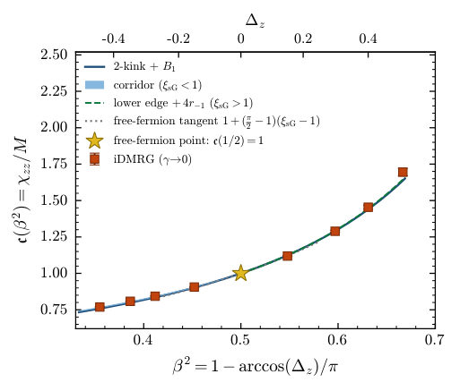
<figcaption class="paper-figure-caption"><b>Fig 1.</b> FIG. 1. The universal coefficient c(β2) = χzz/M. Line: the two-kink+B1 evaluation, Eqs. (5)–(6), a lower bound on c (the B1 component exists only for β2 &lt; 1 2). Shaded band: the two-sided corridor, Eq. (7), for ξsG &lt; 1 (sub-symbol on this scale); dashed: the corridor’s lower edge c2k + 4r−1 for ξsG &gt; 1; dotted: the free-fermion tangent, Eq. (8). Squares: iDMRG determinations χzz/Mexact at eight couplings, using the exact mass, extrapolated to γ →0 (SM Table 1).</figcaption>
</figure>
<figure class="paper-figure-card">
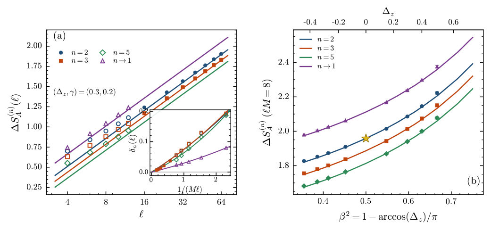
<figcaption class="paper-figure-caption"><b>Fig 2.</b> FIG. 2. The R´enyi entanglement asymmetry ∆S(n) A itself, resolved in replica index and coupling. (a) ∆S(n) A (ℓ) versus interval length at the interacting point (∆z, γ) = (0.3, 0.2) for n = 2, 3, 5 and the von Neumann limit n →1. Symbols are iMPS data: open, from interval reduced density matrices with charge projectors (ℓ≤12); filled, from the charged-moment construction (ℓ= 16–64, n = 2, 3). Lines correspond to the master formula Eq. (4). Inset: deviation δn(ℓ) ≡∆S(n) A (ℓ) −[ 1</figcaption>
</figure>
<figure class="paper-figure-card">
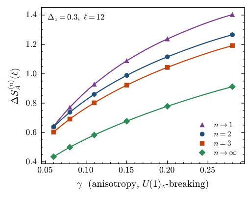
<figcaption class="paper-figure-caption"><b>Fig 3.</b> FIG. 3. ∆S(n) A (ℓ) for a fixed interval (∆z = 0.3, ℓ= 12) versus the anisotropy γ that controls the explicit U(1)z breaking. Colors vary at different R´enyi indexes n.</figcaption>
</figure>
</div>

<p><strong>Summary.</strong> The authors calculate the entanglement asymmetry in the gapped XYZ spin chain by linking it to the static susceptibility via a charged-moment identity. They combine theoretical results from sine-Gordon form factors with numerical iDMRG simulations to derive a universal master formula for this asymmetry. This work provides a rigorous quantitative measure of symmetry breaking encoded in quantum entanglement.</p>
<p><strong>Why it may be interesting.</strong> This work provides deep insights into how entanglement measures quantify symmetry breaking in quantum many-body systems, connecting concepts from critical phenomena (CFT/sine-Gordon) with modern tools like entanglement entropy calculations.</p>
<details>
<summary>Detailed structure</summary>
<p><strong>Main problem.</strong> The paper aims to measure entanglement asymmetry ($\Delta S_A$) and determine its universal amplitude in a gapped phase of the XYZ spin-$rac12$ chain where U(1) symmetry is broken.</p>
<p><strong>Main result.</strong> They derive a master formula for $\Delta S_A^{(n)}(\ell)$ involving logarithmic growth, providing a lower bound on the universal amplitude $c$ via two-kink and one-breather contributions.</p>
<p><strong>Method.</strong> The calculation combines a charged-moment identity with a non-conservation sum rule derived from sine-Gordon form factors, which are then validated using infinite-system iDMRG simulations.</p>
<p><strong>Model / system.</strong> The system is the XYZ spin-$rac12$ chain Hamiltonian in its gapped, U(1)-breaking phase. The analysis utilizes concepts from conformal field theory (sine-Gordon model) and quantum entanglement measures.</p>
<p><strong>Key observables.</strong> Entanglement Asymmetry ($\Delta S_A$), Static Susceptibility ($\chi_{zz}$), Kink mass ($M$), Universal amplitude $c(eta^2)$.</p>
<p><strong>Important parameters / regimes.</strong> Anisotropy parameter $\gamma$, replica index $n$, interval length $\ell$, and the coupling constant related to the sine-Gordon model ($\xi_{sG}$).</p>
<p><strong>Assumptions / limitations.</strong> The calculation relies on a charged-moment identity, treating the system in the continuum limit via the sine-Gordon model, and assuming the leading asymptotic behavior of the entanglement entropy.</p>
<p><strong>Figures summary.</strong> Figures illustrate the comparison between iDMRG results and theoretical bounds for $c(eta^2)$, show the convergence of $\Delta S_A^{(n)}(\ell)$ to a master formula as interval length increases, and plot the rise of $\Delta S_A^{(n)}(\ell)$ with increasing anisotropy $\gamma$.</p>
<p><strong>Paper structure.</strong> The paper proceeds by establishing the charged-moment identity linking asymmetry to susceptibility. It then evaluates this susceptibility using form factors (sine-Gordon model) to derive a lower bound on the amplitude, which is finally confirmed and refined through iDMRG simulations.</p>
</details>
<details>
<summary>Abstract</summary>
<p>The entanglement asymmetry measures how strongly a symmetry is broken inside a subsystem. Analytic results at equilibrium have so far covered free theories and, perturbatively, the critical XXZ chain. We compute the Rényi entanglement asymmetries of a large interval in the gapped, $U(1)$-breaking phase of the interacting XYZ chain. The calculation combines three ingredients. A charged-moment identity, which we prove for fermionic Gaussian and for injective matrix-product ground states, ties the asymmetry to the static susceptibility of the broken charge. A non-conservation sum rule then evaluates the susceptibility from sine-Gordon form factors, its two-kink and one-breather channels providing a lower bound on the universal amplitude. The Baxter--Johnson--Krinsky--McCoy solution supplies the kink mass for different couplings. Infinite-system density-matrix renormalization group simulations built on these masses reproduce the master formula.</p>
</details>
<p><sub><a href="#top">↑ back to top</a></sub></p>

<p><a id="paper-2607.25774"></a></p>
<h3 id="ro-vibrational-van-der-waals-interaction-between-ultracold-polar-molecules"><a href="http://arxiv.org/abs/2607.25774v1">Ro-vibrational van der Waals interaction between ultracold polar molecules</a></h3>
<p><strong>Authors:</strong> Kang Feng, Hanwei Yang, Hubert J. Jóźwiak, Tijs Karman<br>
<strong>Type:</strong> theory · <strong>Category:</strong> other · <strong>PDF:</strong> <a href="https://arxiv.org/pdf/2607.25774v1">https://arxiv.org/pdf/2607.25774v1</a><br>
<strong>Analysis basis:</strong> full PDF text, analyzed in chunks
<strong>Topic relevance:</strong> 🔥 <code>analog quantum simulation</code> <strong>4/5</strong> · <code>correlated / nonlocal dissipation</code> <strong>1/5</strong> · <code>entanglement &amp; information structure</code> <strong>1/5</strong> · <code>methods for driven-dissipative</code> <strong>1/5</strong> · <code>non-equilibrium dynamics</code> <strong>1/5</strong></p>
<div class="figure-strip-hint">↔ Scroll figures horizontally</div>
<div class="paper-figures-scroll">
<figure class="paper-figure-card">
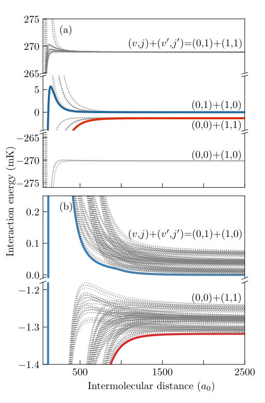
<figcaption class="paper-figure-caption"><b>Fig 1.</b> FIG. 2. Interaction potentials for NaK molecules in- teracting by the ro-vibrational vdW interaction. Illustrated in gray are adiabatic potential curves for different partial waves L = 0, 2, 4, and corresponding to different hyperfine states. The repulsive (attractive) s-wave interaction poten- tials are shown in blue (red) for the channels (v, j)+(v′, j′) = (0, 1) + (1, 0) ((0, 0) + (1, 1)) in the hyperfine ground state. Additional thresholds such as (v, j) + (v′, j′) = (0, 0) + (1, 0) and (0, 1) + (1, 1) are shown to occur at different energies on the scale of the rotational constant, and lead to well separated potential curves. Panel (b) provides an expanded view.</figcaption>
</figure>
<figure class="paper-figure-card">
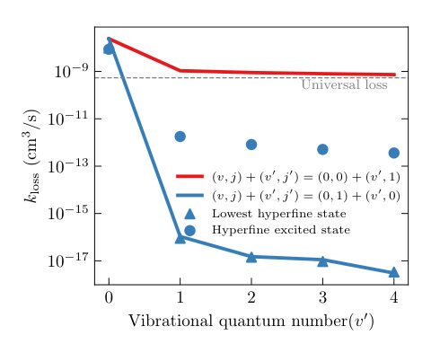
<figcaption class="paper-figure-caption"><b>Fig 2.</b> FIG. 3. Rotation-vibration state dependence of the loss rate for fermionic NaK at 1 nK and a magnetic field B of 500 gauss. At this B field, the lowest hyperfine is mINa = 3/2, mIK = −4 and MF = −5/2 or −3/2 for j = 0 or 1, respectively. The excited hyperfine state shown is |mINa, mIK, mF ⟩= |3/2, −3, −3/2⟩for j = 0, and |3/2, −4, −7/2⟩for j = 1.</figcaption>
</figure>
<figure class="paper-figure-card">
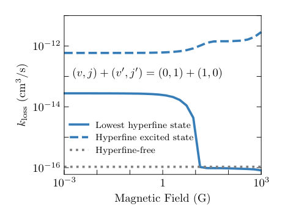
<figcaption class="paper-figure-caption"><b>Fig 3.</b> FIG. 4. Magnetic field dependence of collisional loss rate for fermionic NaK molecules in the lowest and excited hyperfine states of (v, j)+(v′, j′) = (0, 1)+(1, 0) as a function of magnetic field at 1 nK. Near B = 20 G, the loss rate for the lowest hyperfine state exhibits a suppression of approximately two orders of magnitude, while the excited hyperfine state shows a slight increase.</figcaption>
</figure>
<figure class="paper-figure-card">
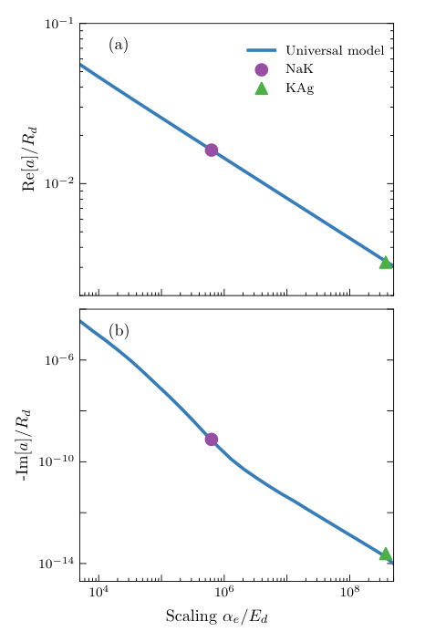
<figcaption class="paper-figure-caption"><b>Fig 4.</b> FIG. 5. Universal scaling of the scattering length for ro-vibrational van der Waals repulsion. The universal relation is calculated in a minimal model that only accounts for the pair states (v, j) + (v′, j′) = (0, 1) + (1, 0) to (0, 0) + (1, 1), split by 2αe, see main text. Panels (a) and (b) shows the real and imaginary part of the scattering length, respectively. The scattering length is expressed in dipolar length units, and shown as a universal function of the dimensionless parameter αe/Ed. Markers indicate the results of full coupled-channels calculations for NaK and KAg, and the agreement with the minimal model verifies the universality.</figcaption>
</figure>
<figure class="paper-figure-card">
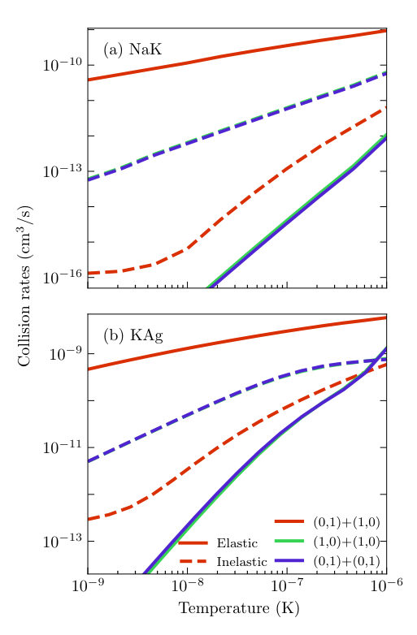
<figcaption class="paper-figure-caption"><b>Fig 5.</b> FIG. 6. Collision rates in a Fermi mixture for various pairs of rotational-vibrational state of (a) NaK and (b) KAg as a function of temperature.</figcaption>
</figure>
</div>

<p><strong>Summary.</strong> The paper develops a theoretical framework to calculate the ro-vibrational van der Waals interaction in ultracold polar molecules. It finds this specific interaction is unusually strong, allowing for novel applications such as evaporative cooling and controlled state manipulation without external field shielding. This opens new avenues for quantum simulation using molecular gases.</p>
<p><strong>Why it may be interesting.</strong> This work directly addresses controllable, state-dependent long-range interactions in molecular systems, which is crucial for building quantum simulators or studying fundamental many-body physics in a highly tunable platform.</p>
<details>
<summary>Detailed structure</summary>
<p><strong>Main problem.</strong> The study focuses on theoretically describing and harnessing the ro-vibrational van der Waals (vdW) interaction between ultracold polar molecules.</p>
<p><strong>Main result.</strong> This novel ro-vibrational vdW interaction is predicted to be significantly stronger than other molecular interactions, enabling advanced quantum control techniques like evaporative cooling without external shielding.</p>
<p><strong>Method.</strong> The analysis employs second-order perturbation theory applied to the dipole-dipole interaction Hamiltonian, utilizing the Dunham expansion for energy levels.</p>
<p><strong>Model / system.</strong> The system involves ultracold polar molecules in different ro-vibrational states $(v, j)$. The interactions are governed by the anisotropic dipole-dipole coupling and anharmonicity effects.</p>
<p><strong>Key observables.</strong> Interaction strength ($C_6$), collision dynamics (elastic vs. inelastic loss), and state-dependent interaction coefficients.</p>
<p><strong>Important parameters / regimes.</strong> Molecular constants like rotational/vibrational frequencies ($\omega_e, B_e$) and the ro-vibrational coupling constant ($\alpha_e$).</p>
<p><strong>Assumptions / limitations.</strong> The primary assumption is that the anharmonicity of the potential leads to a non-resonant dipolar interaction (ro-vibrational vdW) that dominates over purely rotational or hyperfine contributions.</p>
<p><strong>Figures summary.</strong> Figure 1 illustrates molecular energy levels showing coupling between states due to anharmonicity, which drives the ro-vibrational vdW mechanism.</p>
<p><strong>Paper structure.</strong> The paper first introduces the physical system and the need for strong interactions. It then develops the theoretical framework by calculating the ro-vibrational coupling constant ($\alpha_e$) using various potential models. Finally, it details the resulting strong vdW interaction and its diverse applications in quantum simulation.</p>
</details>
<details>
<summary>Abstract</summary>
<p>We describe the ro-vibrational van der Waals interaction between ultracold polar molecules. This interaction is strong, leading to fast elastic collisions and orders of magnitude suppression of collisional loss. This enables evaporative cooling of Fermi mixtures of molecules in different ro-vibrational states, without active shielding by applying external fields. The scheme is compatible with microwave shielding, where it enables controlled state dependent interactions, opening up new opportunities for quantum simulation and impurity physics. The interaction can also be used to stabilize fermionic molecules in optical lattices, to control interactions in synthetic dimensions, for enhanced tweezer loading, and direct infrared shielding.</p>
</details>
<p><sub><a href="#top">↑ back to top</a></sub></p>

<p><a id="paper-2607.24947"></a></p>
<h3 id="realizing-error-suppression-in-partially-fault-tolerant-quantum-simulations-with-ibm-quantum-computers"><a href="http://arxiv.org/abs/2607.24947v1">Realizing Error Suppression in Partially Fault-Tolerant Quantum Simulations with IBM Quantum Computers</a></h3>
<p><strong>Authors:</strong> Henry Froland, Dorota M. Grabowska, Sebastian Grieninger, Jeremy Hartse, Anne L. Lashbrook, Zhiyao Li, Ziyuan Li, Sarah J. M. Powell, Martin J. Savage, Xiaojun Yao, Nikita A. Zemlevskiy<br>
<strong>Type:</strong> experiment · <strong>Category:</strong> quantum information and computing · <strong>PDF:</strong> <a href="https://arxiv.org/pdf/2607.24947v1">https://arxiv.org/pdf/2607.24947v1</a><br>
<strong>Analysis basis:</strong> full PDF text, analyzed in chunks
<strong>Topic relevance:</strong> 🔥 <code>QC/QI experiment</code> <strong>4/5</strong> · <code>analog quantum simulation</code> <strong>1/5</strong> · <code>methods for driven-dissipative</code> <strong>1/5</strong> · <code>quantum measurements</code> <strong>1/5</strong></p>
<div class="figure-strip-hint">↔ Scroll figures horizontally</div>
<div class="paper-figures-scroll">
<figure class="paper-figure-card">
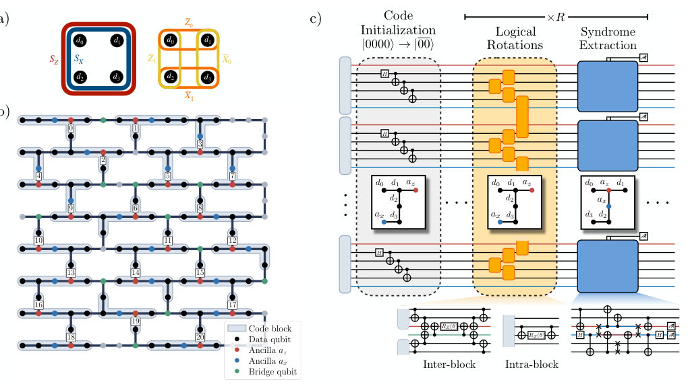
<figcaption class="paper-figure-caption"><b>Fig 1.</b> FIG. 1. Error Detection in Quantum Simulations on Heavy-Hex Topology. a) The stabilizers and logical operators that act on data qubits d0-d3 in the [[4, 2, 2]] error-detecting code. The Z-stabilizer is shown in red and the X-stabilizer is shown in blue. Logical operators are grouped into commuting sets represented by the color. b) The placement of code blocks (grey) onto the ibm boston quantum processor. Each code block has four data qubits (black) and two ancillas for Z- and X-stabilizer extraction (red and blue respectively). Bridge qubits between blocks used for routing are shown in green. c) Circuit operation for encoded quantum simulations. Dashed outlines indicate nFT operations,...</figcaption>
</figure>
<figure class="paper-figure-card">
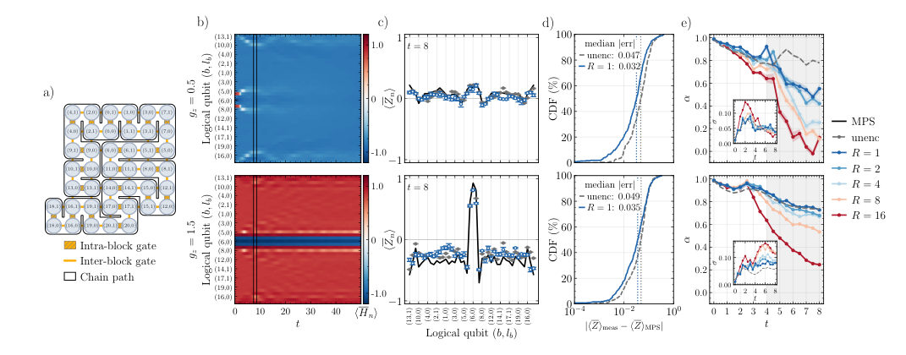
<figcaption class="paper-figure-caption"><b>Fig 2.</b> FIG. 2. Encoded Simulations of Dynamics in the 1D Ising Model. a) The realized logical connectivity grid by the block placement in Fig. 1b). Logical qubits (b, lb) (grey) are joined by intra-block gates (hatched orange) and inter-block gates (orange). The black outline traces the gates used to simulate a 1D chain. b) The energy density ⟨Hn⟩computed from MPS simulations as a function of time t and logical qubit n = (b, lb) for gz = 0.5 (top) and gz = 1.5 (bottom). A size-three true-vacuum bubble located at the center is evolved with nT = 500 Trotter steps of size δt = 0.1. The black rectangle shows the t for which device results are compared in c). c) Comparison of encoded (blue) and...</figcaption>
</figure>
<figure class="paper-figure-card">
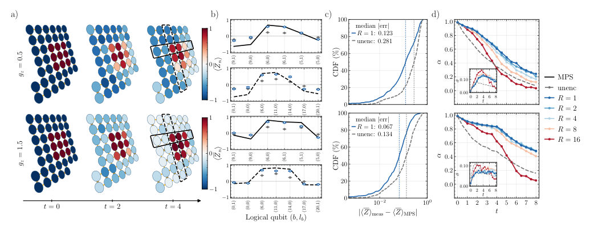
<figcaption class="paper-figure-caption"><b>Fig 3.</b> FIG. 3. Encoded Simulations of the 2D Ising Model. a) The magnetization ⟨Zn⟩of a 3 × 3 true-vacuum bubble as a function of time t for gz = 0.5 (top row) and gz = 1.5 (bottom row), computed from MPS simulations with δt = 0.1. The black solid and dashed rectangles show cross-sections of the grid at t = 4 for which data is plotted in b). b) Encoded (blue) and unencoded (grey) results from ibm boston compared to MPS results (black) for the horizontal (solid) and vertical (dashed) cross-sections outlined in a), as a function of logical qubit number n = (b, lb). The encoded data has R = 1 syndrome measurement rounds. c) Cumulative distribution functions (CDFs) of the per-qubit, per-time absolute...</figcaption>
</figure>
<figure class="paper-figure-card">

<figcaption class="paper-figure-caption"><b>Fig 4.</b> FIG. 4. Encoding Improvement in α. Percent improvement in α of encoded over unencoded results as a function of time t for 1D and 2D simulations. Results with R = 1 syndrome extraction rounds for the melting regime (gz = 0.5) are shown in shades of red, and the localized regime (gz = 1.5) is shown in shades of blue. The shading represents statistical uncer- tainty determined through bootstrap resampling.</figcaption>
</figure>
<figure class="paper-figure-card">
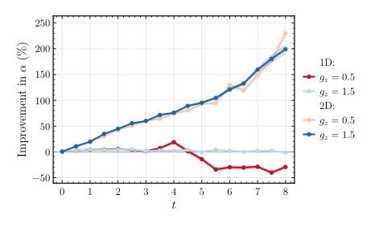
<figcaption class="paper-figure-caption"><b>Fig 5.</b> Figure 4 shows the percentage improvement in α over time for R = 1 in 1D and 2D simulations. The im- provement in the results from runs with encoding grows approximately linearly in 2D, with an average slope of 23.5 ± 0.8% in the melting regime and 22.8 ± 0.5% in the localized regime. Because each caught error prevents corruption over a lightcone volume scaling as O(t2) in 2D compared to O(t) in 1D, detection has greater leverage in 2D and the encoding improvement grows with t. The greater than 200% improvement in 2D is also driven by rapidly decohering unencoded results, as is similarly seen in Fig. 3b). Dynamics at gz = 0.5 and gz = 1.5 are more similar in 2D than in 1D, explaining their...</figcaption>
</figure>
</div>

<p><strong>Summary.</strong> This paper demonstrates how partially fault-tolerant quantum encoding can significantly boost the accuracy of quantum simulations on current noisy hardware. By using the [[4, 2, 2]] code and an advanced filtering technique called ORP, the authors show substantial improvements in estimating local observables for the Ising model compared to unencoded runs. This work provides a practical roadmap for scaling complex quantum simulations beyond immediate NISQ limitations.</p>
<p><strong>Why it may be interesting.</strong> This work directly addresses the critical gap between NISQ devices and fault-tolerance by proposing a resource-efficient, intermediate error correction strategy applicable to simulating condensed matter models like the Ising model.</p>
<details>
<summary>Detailed structure</summary>
<p><strong>Main problem.</strong> The primary goal is to improve quantum simulation performance on noisy, near-term hardware by implementing error suppression techniques.</p>
<p><strong>Main result.</strong> Partially fault-tolerant encoding significantly outperforms unencoded simulations, showing accuracy improvements of 2-6% in 1+1D and over 200% in 2+1D at late times studied.</p>
<p><strong>Method.</strong> The authors use a partially fault-tolerant scheme combining syndrome extraction with non-fault-tolerant logical operations, alongside Observable-Ranked Postselection (ORP) for data filtering.</p>
<p><strong>Model / system.</strong> Simulations focus on the Ising model in 1+1D and 2+1D lattices. The physical implementation uses IBM's superconducting quantum computer (<code>ibm boston</code>) with a heavy-hex processor, employing the [[4, 2, 2]] Iceberg code.</p>
<p><strong>Key observables.</strong> Local observables are estimated; key diagnostics include the logical error rate and the improvement factor in local-observable accuracy.</p>
<p><strong>Important parameters / regimes.</strong> The comparison is made between unencoded vs. partially fault-tolerant regimes, showing performance gains that scale with circuit depth (especially in 2+1D).</p>
<p><strong>Assumptions / limitations.</strong> The approach balances error rate improvements from FT against overhead by using a pFT scheme; ORP assumes the optimal cutoff level balances bias reduction against statistical uncertainty inflation.</p>
<p><strong>Figures summary.</strong> Figure 1a details the structure and stabilizers of the [[4, 2, 2]] code block. Figure 1b shows the placement of these blocks on the ibm boston processor. Figure 1c illustrates the circuit operations involving syndrome extraction and non-FT logical gates.</p>
<p><strong>Paper structure.</strong> The paper introduces the need for error suppression in quantum simulations, details the use of the [[4, 2, 2]] code block structure, explains the partially fault-tolerant protocol combining FT syndrome measurement with nFT logic, and finally presents results showing quantitative improvements over unencoded baselines using ORP.</p>
</details>
<details>
<summary>Abstract</summary>
<p>Quantum error-detecting codes offer a near-term path for improving the performance of quantum simulations on noisy hardware. Using IBM's superconducting quantum computer ibm_boston, we show that partially fault-tolerant encoded quantum simulations of the Ising model in 1+1D and 2+1D outperform their unencoded counterparts in estimating local observables. To represent 42 logical qubits on the heavy-hex quantum processor, 21 blocks of the [[4, 2, 2]] Iceberg code and up to 136 physical qubits are used. By pairing fault-tolerant syndrome extraction with non-fault-tolerant logical operations, this scheme preserves many of the benefits of error detection while avoiding the overhead typically required for a fully fault-tolerant logical gate set. The encoding's square logical connectivity, together with the freedom to place logical qubits within each block, enables simulations of a 2D spatial lattice with lower circuit depth than the unencoded implementation requires. We introduce Observable-Ranked Postselection, a selective-filtering technique based on syndrome correlations that recovers reliable results without the prohibitive shot loss of full syndrome postselection. Under the cumulative effect of device errors, this encoding improves local-observable accuracy over the unencoded baseline by 2-6% at intermediate times in 1+1D simulations, growing with circuit depth to over 200% in 2+1D at the latest times studied.</p>
</details>
<p><sub><a href="#top">↑ back to top</a></sub></p>

<p><a id="paper-2607.25900"></a></p>
<h3 id="effect-valued-measurement-models-and-contextuality"><a href="http://arxiv.org/abs/2607.25900v1">Effect-valued measurement models and contextuality</a></h3>
<p><strong>Authors:</strong> Samson Abramsky<br>
<strong>Type:</strong> theory · <strong>Category:</strong> other · <strong>PDF:</strong> <a href="https://arxiv.org/pdf/2607.25900v1">https://arxiv.org/pdf/2607.25900v1</a><br>
<strong>Analysis basis:</strong> full PDF text, analyzed in chunks
<strong>Topic relevance:</strong> 🔥 <code>quantum measurements</code> <strong>4/5</strong> · <code>measurement-induced transitions</code> <strong>1/5</strong></p>
<div class="figure-strip-hint">↔ Scroll figures horizontally</div>
<div class="paper-figures-scroll">
<figure class="paper-figure-card">

<figcaption class="paper-figure-caption"><b>Fig 1.</b> Low-resolution page preview, page 2</figcaption>
</figure>
<figure class="paper-figure-card">
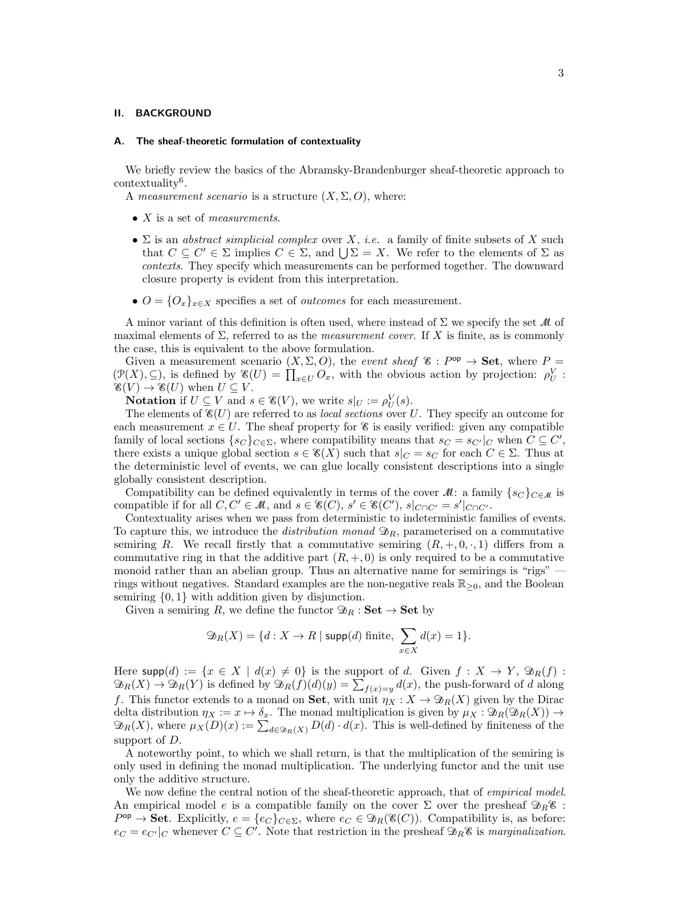
<figcaption class="paper-figure-caption"><b>Fig 2.</b> Low-resolution page preview, page 3</figcaption>
</figure>
<figure class="paper-figure-card">
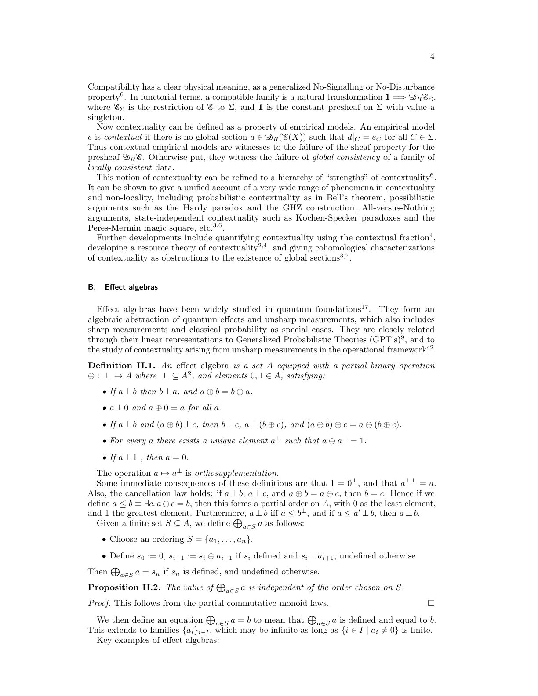
<figcaption class="paper-figure-caption"><b>Fig 3.</b> Low-resolution page preview, page 4</figcaption>
</figure>
<figure class="paper-figure-card">
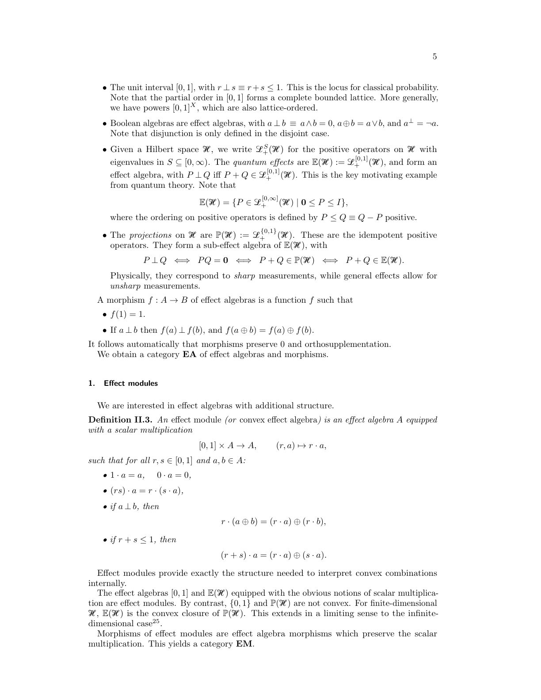
<figcaption class="paper-figure-caption"><b>Fig 4.</b> Low-resolution page preview, page 5</figcaption>
</figure>
<figure class="paper-figure-card">
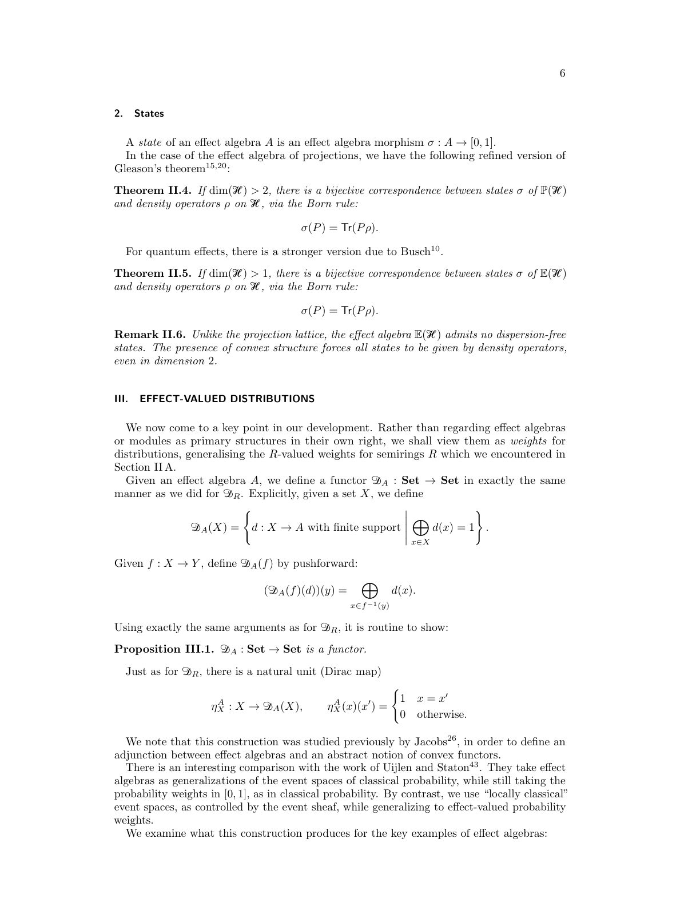
<figcaption class="paper-figure-caption"><b>Fig 5.</b> Low-resolution page preview, page 6</figcaption>
</figure>
</div>

<p><strong>Summary.</strong> This theoretical paper generalizes the study of contextuality by replacing probability measures with distributions valued in effect algebras. It develops a unified framework that distinguishes between inherent structural contextuality and observable contextuality after measurement outcomes are realized. The methodology uses advanced tools from sheaf theory and convex geometry to derive generalized mathematical criteria for quantum non-contextuality.</p>
<p><strong>Why it may be interesting.</strong> This work provides a deep mathematical underpinning for understanding measurement limitations in quantum mechanics, connecting abstract algebra (effect algebras) directly to fundamental physical concepts like non-contextuality and resource theories.</p>
<details>
<summary>Detailed structure</summary>
<p><strong>Main problem.</strong> The paper develops a unified mathematical framework to analyze quantum contextuality by generalizing standard probability-based models to those valued in convex effect algebras.</p>
<p><strong>Main result.</strong> It establishes a clear distinction between internal contextuality (structural) and observable contextuality (state-dependent), characterizing non-contextuality via generalized cone programs.</p>
<p><strong>Method.</strong> The authors employ sheaf theory, ordered-vector-space representations of effect modules, and cone duality to generalize linear programming formulations used in classical probability theory.</p>
<p><strong>Model / system.</strong> The model is the 'effect-valued measurement model,' which replaces standard probability distributions with distributions valued in an effect algebra A. This encompasses probabilistic, deterministic, and general quantum measurements (POVMs).</p>
<p><strong>Key observables.</strong> Contextuality witnesses (generalized Bell inequalities), observable contextuality, internal contextuality, and the feasibility of associated cone programs.</p>
<p><strong>Important parameters / regimes.</strong> The structure is governed by the effect algebra A, which abstracts unsharp measurement effects.</p>
<p><strong>Assumptions / limitations.</strong> It assumes that general measurements can be modeled using convex effect algebras, allowing for a unified algebraic treatment beyond standard quantum probability measures.</p>
<p><strong>Paper structure.</strong> The paper progresses by generalizing the sheaf-theoretic approach from semirings to effect algebras. It then analyzes contextuality via cone programs and introduces generalized Bell witnesses derived from duality theory, concluding with structural analyses of dilation theorems and monadic constructions.</p>
</details>
<details>
<summary>Abstract</summary>
<p>We generalize the Abramsky--Brandenburger sheaf-theoretic treatment of contextuality by replacing probability distributions with distributions valued in a convex effect algebra \(A\). This yields a notion of \(A\)-valued measurement model encompassing probabilistic, deterministic, and quantum measurement structures within a single framework.   States \(σ:A\to[0,1]\) induce ordinary empirical models, allowing observable behaviour to be viewed as arising from effect-valued measurement data. This leads to a distinction between internal contextuality of \(A\)-models and observable contextuality after state evaluation. We analyze the relationship between these notions and identify coherence conditions under which observable classical explanations assemble into internal ones.   Using the ordered-vector-space representation of effect modules, we show that non-contextuality is characterized by feasibility of an associated cone program, generalizing the linear-programming formulation of contextuality in the probabilistic case. We also introduce an effect-valued contextual fraction and study its relation to observable contextuality witnesses. We show how cone duality leads to a notion of Bell witnesses for contextuality as a direct generalization of Bell inequalities.   Finally, we analyze sharp realizability and uniform dilation for measurement models, clarifying the relationship between general POVMs and projective measurements, and show how resource-indexed effect structures induce graded monads generalizing the quantum monad.</p>
</details>
<p><sub><a href="#top">↑ back to top</a></sub></p>

<p><a id="paper-2607.25941"></a></p>
<h3 id="sampling-hard-circuits-with-verifiably-high-fidelity"><a href="http://arxiv.org/abs/2607.25941v1">Sampling hard circuits with verifiably high fidelity</a></h3>
<p><strong>Authors:</strong> Simon Martiel, Jay-U Chung, Alireza Seif, Soumik Ghosh, Ian Hincks, Abhinav Deshpande, Bill Fefferman, Jay M. Gambetta, Ali Javadi-Abhari<br>
<strong>Type:</strong> both · <strong>Category:</strong> quantum information and computing · <strong>PDF:</strong> <a href="https://arxiv.org/pdf/2607.25941v1">https://arxiv.org/pdf/2607.25941v1</a><br>
<strong>Analysis basis:</strong> full PDF text, analyzed in chunks
<strong>Topic relevance:</strong> 🔥 <code>QC/QI experiment</code> <strong>4/5</strong> · <code>quantum measurements</code> <strong>1/5</strong></p>
<div class="figure-strip-hint">↔ Scroll figures horizontally</div>
<div class="paper-figures-scroll">
<figure class="paper-figure-card">
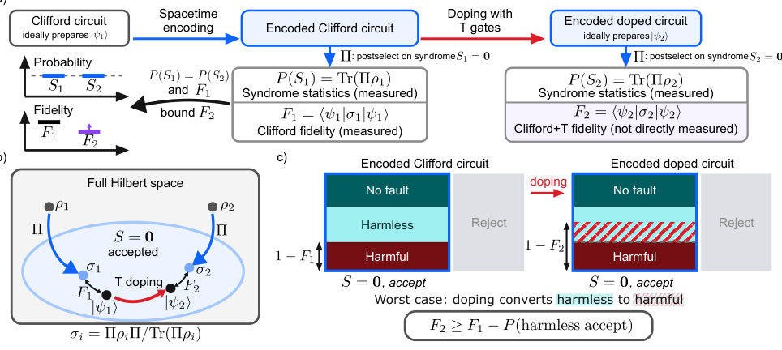
<figcaption class="paper-figure-caption"><b>Fig 1.</b> Figure 1. Bounding the fidelity of hard quantum states. a. An encoded Clifford circuit’s state fidelity F1 and its syndrome distributions S1 are measured efficiently. The circuit is doped with T gates that commute with code stabilizers, yielding statistically indistinguishable syndromes S2. This leads to a lower bound on the fidelity F2 of the (hard) doped circuit. b. The code projects both states to the same subspace, and doping only rotates within this subspace. c. A lower bound on F2 can be efficiently estimated from the classification of Pauli faults affecting the Clifford circuit. The set of rejected faults and the no-fault probability remain invariant with doping. Any loss in fidelity...</figcaption>
</figure>
<figure class="paper-figure-card">
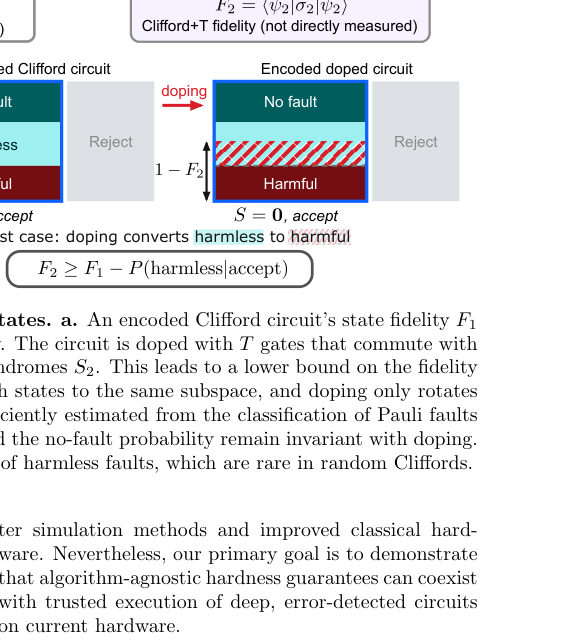
<figcaption class="paper-figure-caption"><b>Fig 2.</b> Figure 1 summarizes how the fidelity certificate is obtained in a DCS workflow. We begin with a ran- dom Clifford circuit, whose output state fidelity can be measured and verified efficiently using direct fidelity estimation (DFE) [20, 21]. Notably, DFE makes no assumptions about hardware noise. We then encode this circuit in a spacetime code, where post-selection on the zero syndrome projects the state into a low-error subspace [22]. Lastly, we increase the amount of non- Cliffordness (“magic”) by carefully doping with T gates while preserving the code structure. This ensures that the two circuits (i.e., before and after doping) detect the same set of faults. We experimentally confirm that...</figcaption>
</figure>
<figure class="paper-figure-card">
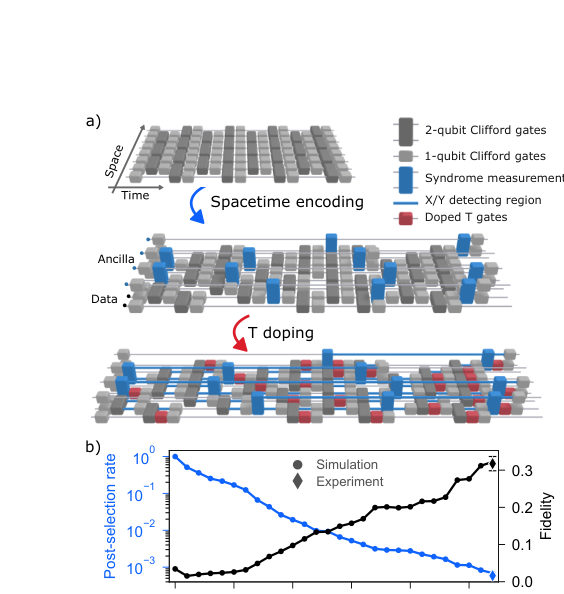
<figcaption class="paper-figure-caption"><b>Fig 3.</b> Figure 2. Constructing doped Clifford circuits within spacetime codes. a. A highly entangling Clif- ford circuit is encoded in a spacetime code and doped with T (Z-rotation) gates on wires not subject to X or Y error detection, producing an encoded state with high entanglement and magic. b. Additional ancillas improve error detection and fidelity at the cost of lower post-selection rates. Pauli-noise simulations agree well with experiment, assuming 0.1% CZ error, idle process fidelity e−t/τ with τ = 100 µs, and 0.3% readout error.</figcaption>
</figure>
<figure class="paper-figure-card">
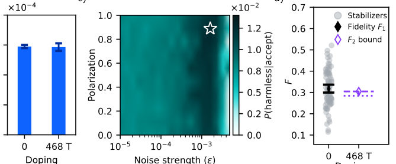
<figcaption class="paper-figure-caption"><b>Fig 4.</b> Figure 3. Quantum advantage experiment with a fidelity bound. a. Qubit layout on the IBM Boston superconducting processor, consisting of 70 data and 27 ancilla qubits. b. Zero-syndrome probability P(accept) is similar before and after doping, consistent with T gates being noiseless. c. Estimated probability of harmless, accepted errors under various noise strengths and polarizations. The maximum possible fidelity drop that doping can cause due to conversion of harmless faults is 0.013(1). d. Direct fidelity estimation of the Clifford state (0 doping) shows fidelity F1 = 0.32(1). We lower bound the fidelity of the hard doped state to F2 ≥0.284 (dotted line), and collect 2,051 post-selected...</figcaption>
</figure>
<figure class="paper-figure-card">
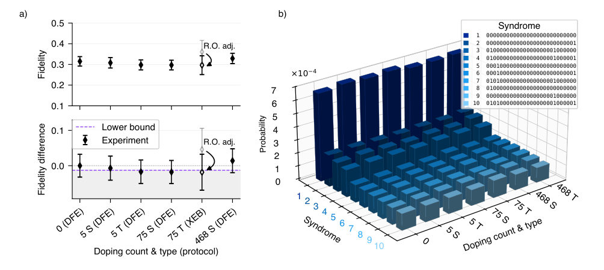
<figcaption class="paper-figure-caption"><b>Fig 5.</b> Figure 4. Validation of fidelity lower bound. a. Various doping counts (5, 75, 468) and types (T or S gates) are chosen that permit efficient measurement of fidelity (DFE) or fidelity proxy (XEB). XEB is known to overestimate fidelity due to readout errors, so we also show a rescaled quantity that controls for this effect. All experiments show that our estimated lower bound accurately captures the maximum loss in fidelity due to doping. Error bars show 95% confidence intervals. b. Syndrome probability distributions show high consistency, regardless of doping strategy. This is consistent with a similar noise environment affecting all experiments, and doping gates being noiseless.</figcaption>
</figure>
</div>

<p><strong>Summary.</strong> The paper presents a method called Doped Clifford Sampling (DCS) to demonstrate quantum computational hardness while simultaneously addressing hardware noise and verification. By encoding hard circuits into structured quantum codes, the authors achieve high fidelity at deep depths on superconducting qubits. This provides a systematic way to certify quantum advantage claims with quantifiable error bounds.</p>
<p><strong>Why it may be interesting.</strong> This work directly addresses the gap between theoretical quantum advantage claims (hardness) and experimental reality (noise/verification), providing a concrete framework for certifying computation in NISQ-era devices relevant to AMO platforms like trapped ions or superconducting circuits.</p>
<details>
<summary>Detailed structure</summary>
<p><strong>Main problem.</strong> The challenge is combining complexity-theoretic hardness (for quantum advantage) with the practical requirements of scalable quantum computation: error suppression and verifiable fidelity.</p>
<p><strong>Main result.</strong> The authors propose a structured circuit approach that allows for high-fidelity sampling from hard quantum states while providing a device-dependent, quantifiable certificate of experimental fidelity.</p>
<p><strong>Method.</strong> They introduce 'structured circuits' encoded in quantum codes (spacetime codes) to simultaneously achieve hardness and error correction. Fidelity is certified by measuring code syndromes after syndrome post-selection.</p>
<p><strong>Model / system.</strong> The work uses a 70-qubit, depth-70 Clifford circuit doped with T gates, implemented on a superconducting quantum processor using 97 physical qubits for encoding in spacetime codes.</p>
<p><strong>Key observables.</strong> Lower bound on the fidelity (e.g., $\ge 0.284$ at 95% confidence), syndrome measurement distributions, and the required number of physical qubits vs. logical qubits.</p>
<p><strong>Important parameters / regimes.</strong> Circuit depth (70), number of T gates (468), encoding overhead (97 physical qubits for 70 data qubits), and fidelity lower bound ($\ge 0.284$).</p>
<p><strong>Assumptions / limitations.</strong> The resulting certificate is device dependent, and the fidelity lower bound relies on assuming a general Pauli noise model attainable by twirling gates.</p>
<p><strong>Figures summary.</strong> Figures illustrate the workflow of doped Clifford sampling (DCS), comparing measured vs. expected fidelities across doping stages; other figures detail qubit layouts and validation of the fidelity lower bound using DFE.</p>
<p><strong>Paper structure.</strong> The paper introduces the DCS protocol, demonstrates its application to a large-scale circuit on superconducting hardware, quantifies the resulting fidelity lower bound through syndrome measurements, and compares this approach favorably against existing fidelity benchmarks.</p>
</details>
<details>
<summary>Abstract</summary>
<p>Sampling-based proposals are prominent candidates for demonstrating quantum computations beyond the reach of classical supercomputers. However, it has been difficult to combine their complexity-theoretic hardness with two capabilities needed for scalable quantum computing more generally: suppressing hardware errors, and verifying the quantum computation itself. Here we address both issues by introducing structured circuits, which, in addition to provable hardness guarantees, admit an encoding in a quantum code. This allows us to simultaneously reach high fidelities at high circuit depths, and to certify an experimental fidelity via the circuit structure and measurement of code syndromes. The resulting certificate is device dependent, but requires substantially weaker noise assumptions than existing fidelity proxy benchmarks. We demonstrate our proposal with a $70$-qubit, depth-$70$ Clifford circuit doped with $468$ $T$ gates. We use a total of $97$ physical qubits to encode this computation in spacetime codes, effectively suppressing gate error rates by $10\times$ after syndrome post-selection, and yielding a state with a fidelity lower bound of $0.284$ with $95\%$ confidence. Our construction is a systematic method for promoting a stabilizer state to a magic state while keeping an error-detected fidelity certificate.</p>
</details>
<p><sub><a href="#top">↑ back to top</a></sub></p>

<p><a id="paper-2607.25558"></a></p>
<h3 id="ultradilute-quasi-two-dimensional-bose-bose-liquid-mixtures"><a href="http://arxiv.org/abs/2607.25558v1">Ultradilute quasi-two-dimensional Bose-Bose liquid mixtures</a></h3>
<p><strong>Authors:</strong> Leandra Vranješ Markić, Ivan Poparić, Krešimir Dželalija, Petar Stipanović, Jordi Boronat<br>
<strong>Type:</strong> theory · <strong>Category:</strong> quantum gases · <strong>PDF:</strong> <a href="https://arxiv.org/pdf/2607.25558v1">https://arxiv.org/pdf/2607.25558v1</a><br>
<strong>Analysis basis:</strong> full PDF text, analyzed in chunks
<strong>Topic relevance:</strong> 🔥 <code>analog quantum simulation</code> <strong>4/5</strong> · <code>methods for driven-dissipative</code> <strong>1/5</strong></p>
<div class="figure-strip-hint">↔ Scroll figures horizontally</div>
<div class="paper-figures-scroll">
<figure class="paper-figure-card">
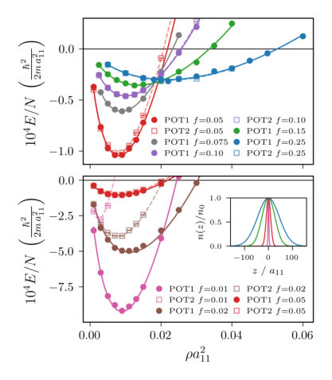
<figcaption class="paper-figure-caption"><b>Fig 1.</b> FIG. 1. Equation of state of the bulk phase for a magnetic field B = 56.337 G and several harmonic confinements de- scribed by the squeezing factor f = az/0.639 µm. The calcu- lations are performed for two different potential models with same scattering length and effective range, showing universal- ity up to f = 0.05. The liquid distribution in the direction of squeezing follows has the single-particle gaussian shape, which is shown in the inset. From wider, to narrower distributions correspond to f=0.25, 0.15, 0.05 and 0.01.</figcaption>
</figure>
<figure class="paper-figure-card">
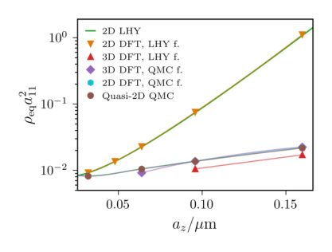
<figcaption class="paper-figure-caption"><b>Fig 2.</b> FIG. 3. The equilibrium densities of the bulk liquid, obtained with quasi-2D QMC calculations are compared to 2D LHY predictions following Ref. [11] and to saturation densities of droplets studied with DFT functionals, as a function of the harmonic oscillator length describing the quasi-2D confine- ment.</figcaption>
</figure>
<figure class="paper-figure-card">
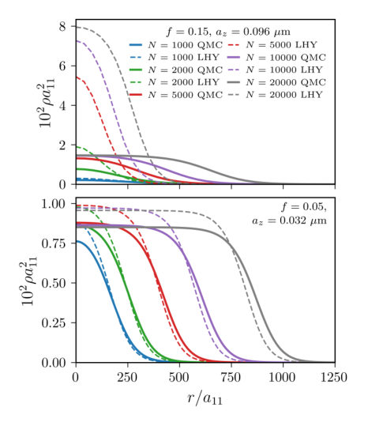
<figcaption class="paper-figure-caption"><b>Fig 3.</b> FIG. 2. Density profiles of droplets obtained with the 2D QMC and 2D LHY functionals compared for two different squeezings f=0.15 (top) and f = 0.05 (bottom), for the mag- netic field B = 56.337 G.</figcaption>
</figure>
<figure class="paper-figure-card">
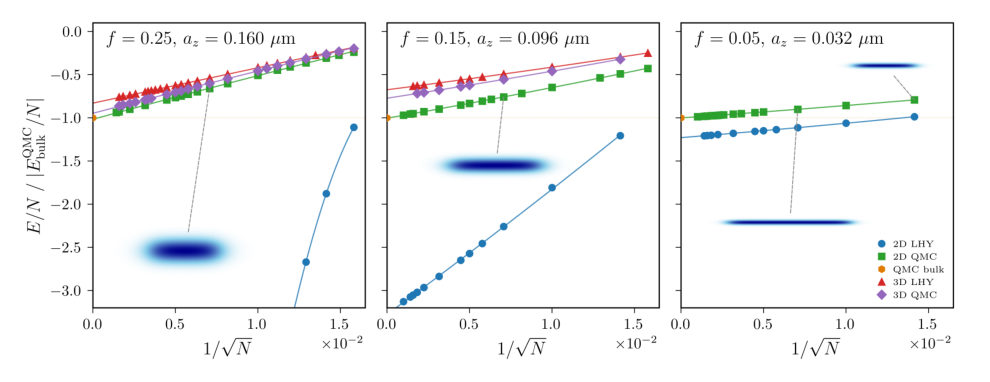
<figcaption class="paper-figure-caption"><b>Fig 4.</b> FIG. 4. Energy per particle of the droplets as a function of N −1/2 calculated with 2D and 3D QMC and LHY functionals, for three different squeezings. The dots at zero x axis correspond to the equilibrium energy in quasi-2D bulk DMC calculation. The insets show the cut through the 3D droplet profile at x = 0 for droplets of size N = 20000 and N = 5000 (for the strongest squeezing only). The z coordinate has been multiplied by a factor of 10 for clarity.</figcaption>
</figure>
<figure class="paper-figure-card">
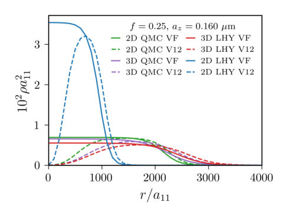
<figcaption class="paper-figure-caption"><b>Fig 5.</b> FIG. 5. Density profiles of droplets with 100000 atoms in a magnetic field B = 56.574 G with f = 0.25 and angular velocity Ω= 2π×10 Hz, without vortex (VF) and with vortex in both components (V12), calculated using different density functionals. Droplet with vortex calculated using 2D LHY functional is metastable.</figcaption>
</figure>
</div>

<p><strong>Summary.</strong> The research uses Quantum Monte Carlo simulations to model Bose-Bose liquid mixtures confined towards two dimensions. It rigorously tests theoretical functionals against these calculations, finding that while 2D models offer computational savings, they break down rapidly as confinement increases beyond a narrow regime. This work is vital for accurately predicting the behavior of quantum droplets and vortices in highly constrained atomic systems.</p>
<p><strong>Why it may be interesting.</strong> This work provides crucial benchmarks for modeling strongly interacting ultracold atomic mixtures in quasi-low dimensional geometries, highlighting the limitations of mean-field approximations (like LHY) when full correlation effects are important.</p>
<details>
<summary>Detailed structure</summary>
<p><strong>Main problem.</strong> The study investigates ultradilute Bose-Bose liquid mixtures confined towards the quasi-two-dimensional (2D) limit to determine the confinement regime where their equations of state exhibit universality.</p>
<p><strong>Main result.</strong> QMC calculations show that universal descriptions based on two scattering parameters ($a$ and $r_{	ext{eff}}$) are only valid for moderate confinement, suggesting a very narrow range where 2D Lee-Huang-Yang (LHY) functionals are applicable.</p>
<p><strong>Method.</strong> The study employs Quantum Monte Carlo (QMC) methods at zero temperature to calculate equations of state and develop density functionals, comparing these results against established LHY predictions.</p>
<p><strong>Model / system.</strong> The system is a mixture of $^{39}	ext{K}$ bosons confined in an external harmonic potential, allowing for the study of crossover from 3D bulk behavior towards ideal 2D physics.</p>
<p><strong>Key observables.</strong> Equations of state, density profiles (with and without vortices), saturation densities, and droplet energies per particle ($E/N$).</p>
<p><strong>Important parameters / regimes.</strong> Scattering length ($a$), effective range ($r_{	ext{eff}}$), and the confinement strength quantified by the harmonic oscillator length ($a_z$) or squeezing factor ($f$).</p>
<p><strong>Assumptions / limitations.</strong> The applicability of 2D LHY functionals is severely limited to a narrow range of confinement, and two scattering parameters are insufficient for describing interactions below a certain confinement threshold.</p>
<p><strong>Figures summary.</strong> Figures compare energy per particle vs. density showing universality limits (Fig. 1); they also contrast droplet density profiles between QMC and LHY methods across varying confinements (Fig. 2), and show the departure of DMC results from LHY predictions as confinement increases (Fig. 3).</p>
<p><strong>Paper structure.</strong> The paper develops theoretical frameworks using QMC to calculate equations of state for various confinements, compares these rigorous results against simpler models like the 2D LHY functional, and applies this analysis to predict properties of self-bound quantum droplets.</p>
</details>
<details>
<summary>Abstract</summary>
<p>We study ultradilute $^{39}$K Bose-Bose bulk mixtures and droplets in an external harmonic potential that confines them in one spatial direction towards the two-dimensional (2D) limit. Equations of state for several confinements are obtained with quantum Monte Carlo (QMC) at $T=0$, using interaction potentials that include information on the $s$-wave scattering length $a$ and the effective range $r_{\rm eff}$. Performing the calculations using two different interaction potential models we have determined the range of confinements for which equations of state are universal in terms of $a$ and $r_{\rm eff}$. Based on the QMC equation of state, we develop a 2D QMC density functional for each confinement strength and use it together with the local density approximation to determine properties of the self-bound drops. For moderate squeezing, energies and droplet profiles obtained using the 2D QMC functional agree well with those obtained using 3D functionals, while offering a substantial reduction in computational cost, and a consistent approach in crossover to 2D. Noticeably, our results approach 2D mean-field (MF) + Lee-Huang-Yang (LHY) predictions only for the most strongly confined systems for which universality in terms of $a$ and $r_{\rm eff}$ is observed. This implies a very narrow range of confinements for which 2D LHY functionals are applicable, which has important consequences for the study of vortices.</p>
</details>
<p><sub><a href="#top">↑ back to top</a></sub></p>

<p><a id="paper-2607.25954"></a></p>
<h3 id="equi-entropic-maps-for-four-partite-quantum-states"><a href="http://arxiv.org/abs/2607.25954v1">Equi-Entropic Maps for Four-Partite Quantum States</a></h3>
<p><strong>Authors:</strong> Wojciech Bruzda, Zahra Raissi<br>
<strong>Type:</strong> theory · <strong>Category:</strong> quantum information and computing · <strong>PDF:</strong> <a href="https://arxiv.org/pdf/2607.25954v1">https://arxiv.org/pdf/2607.25954v1</a><br>
<strong>Analysis basis:</strong> full PDF text, analyzed in chunks
<strong>Topic relevance:</strong> 🔥 <code>entanglement &amp; information structure</code> <strong>4/5</strong></p>
<div class="figure-strip-hint">↔ Scroll figures horizontally</div>
<div class="paper-figures-scroll">
<figure class="paper-figure-card">
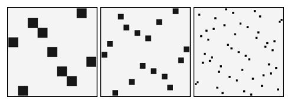
<figcaption class="paper-figure-caption"><b>Fig 1.</b> Figure 1. Three examples of two-unitary centrosymmetric permuta- tion matrices P of size d2 for d ∈{3, 4, 7} which are fixed points of the even branch Ξe. Black squares indicate unities.</figcaption>
</figure>
<figure class="paper-figure-card">
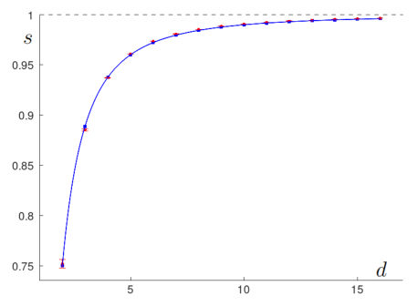
<figcaption class="paper-figure-caption"><b>Fig 2.</b> Figure 2. As the local dimension d tends to infinity, E [S(Ξe(X))], for a Haar-random unitary X ∈U(d2), saturates at 1. The vertical axis indicates the equal-entropy values s = S(Ξe(X)) defined in Sec. II. Squares on the solid line represent theoretical predictions, while dots with error bars (corresponding to the standard error) show the sample means over 256 independent Haar-random unitaries.</figcaption>
</figure>
</div>

<p><strong>Summary.</strong> This paper introduces an 'equi-entropic map' ($\Xi$) designed to enforce that three specific bipartitions of a four-party quantum state share equal linear entropy, even if the state is not maximally entangled. Using group theory and moment calculations, the authors prove this equi-entropic property holds for the map's output states. The work provides a theoretical framework for quantifying structured entanglement uniformity in multipartite systems.</p>
<p><strong>Why it may be interesting.</strong> The concept of enforcing entropic uniformity through a structured linear map provides a powerful theoretical tool for characterizing entanglement properties beyond simple maximal entanglement conditions. This has implications for designing robust quantum protocols.</p>
<details>
<summary>Detailed structure</summary>
<p><strong>Main problem.</strong> The authors investigate a weaker form of entanglement uniformity for four-party quantum systems, requiring three specific bipartitions to share equal linear entropy.</p>
<p><strong>Main result.</strong> They introduce an 'equi-entropic map' ($\Xi$) whose image states are guaranteed to have equal entropies across the three relevant rearrangements. For large dimensions, this common entropy approaches its maximum value as $O(d^{-2})$.</p>
<p><strong>Method.</strong> The analysis involves constructing a linear map $\Xi$ using group averaging over reshuffling and partial transposition operators acting on the state tensor. Convergence is analyzed through iterative procedures and moment calculations.</p>
<p><strong>Model / system.</strong> The system under study consists of four-party quantum states in a composite Hilbert space $H = \mathcal{C}^d \otimes 4$. The analysis relates these states to concepts like Absolutely Maximally Entangled (AME) states and two-unitary matrices.</p>
<p><strong>Key observables.</strong> Normalized Linear Entropy ($S$), the entropy deficit, and the deviation from maximal mixedness in the Hilbert–Schmidt norm ($\delta_{	ext{HS}}$).</p>
<p><strong>Important parameters / regimes.</strong> Local dimension $d$, which is analyzed in the asymptotic limit ($d 	o \infty$).</p>
<p><strong>Assumptions / limitations.</strong> The analysis relies on leading-moment approximations for large dimensions and assumes the existence of specific group structures related to permutations.</p>
<p><strong>Figures summary.</strong> Figure 2 (mentioned conceptually) shows that for Haar-random unitary inputs, the expected entropy $E[S(\Xi(X))]$ saturates towards 1 as the dimension $d$ increases.</p>
<p><strong>Paper structure.</strong> The paper progresses from defining highly entangled states (AME) to introducing the map $\Xi$ via group averaging. It then proves the equi-entropic property of the map's image, analyzes its asymptotic behavior for random inputs, and finally relates entropy deficit to distance measures like the HS defect.</p>
</details>
<details>
<summary>Abstract</summary>
<p>Absolutely maximally entangled states represent a highly constrained form of multipartite entanglement and play an important role in quantum information theory. We investigate a weaker form of uniformity of entanglement for four-party systems of local dimension $d>2$ that requires the three balanced bipartitions to have equal but not necessarily maximal linear entropy. We introduce a linear map $Ξ$ that enforces exact equality of entropies under reshuffling and partial transposition. The transformation arises as the asymptotic limit of an iterative averaging procedure and admits a group-theoretic description in terms of permutations of tensor indices. For Haar-random unitary inputs, a leading-moment analysis supported by numerical simulations predicts highly entangled outputs whose common entropy approaches the maximal value as the local dimension grows. We characterize the algebraic structure, fixed points, and asymptotic behavior of this map and its relation to two-unitary matrices and orthogonal Latin squares.</p>
</details>
<p><sub><a href="#top">↑ back to top</a></sub></p>

<p><a id="paper-2607.25983"></a></p>
<h3 id="superfluidity-without-charge-order-in-the-attractive-hubbard-model-on-the-kagome-lattice"><a href="http://arxiv.org/abs/2607.25983v1">Superfluidity without charge order in the attractive Hubbard model on the kagome lattice</a></h3>
<p><strong>Authors:</strong> Xiaodong Jin, Yingping Mou, Rubem Mondaini<br>
<strong>Type:</strong> theory · <strong>Category:</strong> strongly correlated electrons · <strong>PDF:</strong> <a href="https://arxiv.org/pdf/2607.25983v1">https://arxiv.org/pdf/2607.25983v1</a><br>
<strong>Analysis basis:</strong> full PDF text, analyzed in chunks
<strong>Topic relevance:</strong> 🔥 <code>analog quantum simulation</code> <strong>4/5</strong></p>
<div class="figure-strip-hint">↔ Scroll figures horizontally</div>
<div class="paper-figures-scroll">
<figure class="paper-figure-card">
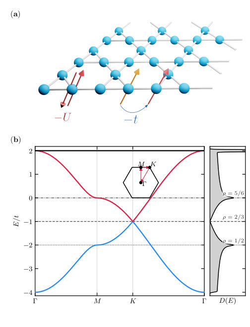
<figcaption class="paper-figure-caption"><b>Fig 1.</b> Figure 1. (a) Geometry of the kagome lattice with lin- ear size L = 3. The on-site attractive interaction −U, with U &gt; 0, and the nearest-neighbor hopping amplitude −t are illustrated. (b) Noninteracting band structure along the high- symmetry path Γ-M-K-Γ in the first Brillouin zone (inset), together with the density of states D(E) (right). The dotted, dashed, and dash-dotted horizontal lines indicate the nonin- teracting Fermi energies at total densities ρ = 1/2, 2/3, and 5/6, respectively. The densities ρ = 1/2 and 5/6 correspond to van Hove singularities, whereas ρ = 2/3 is the Dirac filling.</figcaption>
</figure>
<figure class="paper-figure-card">
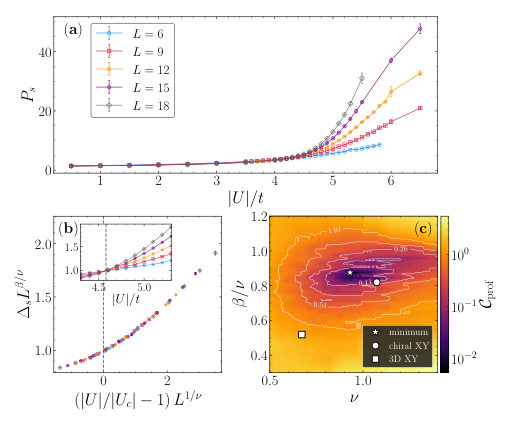
<figcaption class="paper-figure-caption"><b>Fig 2.</b> Figure 2. Finite-size scaling of the superconducting pair structure factor. (a) Pair structure factor Ps as a function of |U|/t for the indicated linear system sizes L. (b) Col- lapse of the scaled order parameter ∆sLβ/ν as a function of (|U|/|Uc| −1)L1/ν, using the parameters obtained by mini- mizing the collapse cost. The inset shows the same scaled observable as a function of |U|/t near the critical region; the dashed line denotes the optimal |Uc|/t. (c) Profiled collapse cost Cprof(ν, β/ν) = min|Uc|/t C(|Uc|/t, ν, β/ν), calculated us- ing 4.3 ≤|U|/t ≤5.3. The star marks the global minimum at |Uc|/t = 4.58(3), ν = 0.93(3), and β/ν = 0.88(1), corre- sponding to β = 0.82(3). The open...</figcaption>
</figure>
<figure class="paper-figure-card">
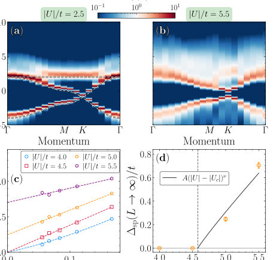
<figcaption class="paper-figure-caption"><b>Fig 3.</b> Figure 3. Single-particle spectral function and excitation gap across the superfluid transition. (a,b) Momentum-resolved spectral function A(k, ω) along the Γ–M–K–Γ path for L = 18 at the indicated interaction strengths. The dashed curves in (a) show the noninteracting kagome-lattice dispersion. (c) Polynomial fittings of the single-particle energy gap at the K Dirac point with the inverse of the linear lattice size from L = 6 to L = 15 are performed for different values of U at the – except for |U|/t = 4 where we use a third-order polynomial with zero constant term (d) Extrapolated gap ∆sp(L →∞) versus |U|/t. The solid curve is a fit to A(|U| −|Uc|)zν, with |Uc|/t = 4.58, ν = 0.93 and z =...</figcaption>
</figure>
<figure class="paper-figure-card">
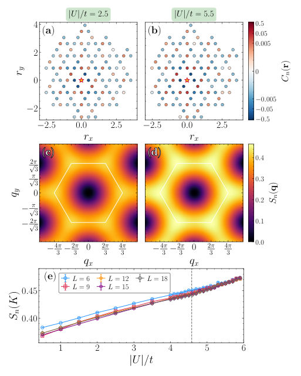
<figcaption class="paper-figure-caption"><b>Fig 4.</b> Figure 4. Real- and momentum-space density correlations across the superfluid transition. (a,b) Connected density cor- relation function Cn(r) = ⟨ˆn0ˆnr⟩−⟨ˆn0⟩⟨ˆnr⟩for L = 6 at the indicated interaction strengths; the star marks the reference site. (c,d) Corresponding unit-cell density structure factor Sn(q), obtained by Fourier transforming the real-space corre- lations and summing over the sublattice indices. The white hexagon delineates the first Brillouin zone. (e) Density struc- ture factor Sn(K) at the Brillouin-zone corner as a function of |U|/t for the indicated system sizes; the vertical dashed line marks the critical interaction |Uc|/t = 4.58 obtained from Fig. 2.</figcaption>
</figure>
<figure class="paper-figure-card">
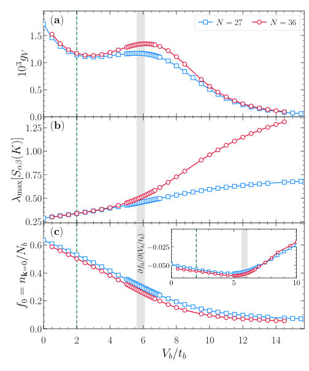
<figcaption class="paper-figure-caption"><b>Fig 5.</b> Figure 5. Exact-diagonalization results for the effective hard- core-boson model at filling ρb = 1/3. (a) Fidelity suscepti- bility per site gV , (b) largest eigenvalue λmax[Sαβ(K)] of the sublattice-resolved connected density structure-factor matrix at the Dirac point K = (2π/3, 0), and (c) zero-momentum condensate fraction f0 = nk=0/Nb as functions of Vb/tb for the indicated cluster sizes. The inset in (c) shows ∂f0/∂(Vb/tb). The gray shaded region spans the finite-size pseudocritical couplings identified by the fidelity maxima, Vb/tb = 5.6 and 6.1 for N = 27 and 36, respectively, while the green dashed line marks the strong-coupling value Vb/tb = 2 obtained from the attractive-Hubbard...</figcaption>
</figure>
</div>

<p><strong>Summary.</strong> This work uses quantum Monte Carlo simulations to study the attractive Hubbard model on the kagome lattice. The primary finding is the existence of a superfluid phase transition characterized by chiral-XY criticality that occurs without any accompanying charge density wave order. This challenges mean-field predictions and highlights the role of geometric frustration in stabilizing pure superconducting behavior.</p>
<p><strong>Why it may be interesting.</strong> The finding that superfluidity can be robustly established without charge order in a geometrically frustrated lattice like kagome is highly relevant for understanding unconventional superconductivity mechanisms beyond simple mean-field treatments, which often predict coexisting CDW and SC states.</p>
<details>
<summary>Detailed structure</summary>
<p><strong>Main problem.</strong> The study investigates the emergence of superfluidity in the attractive Hubbard model on the kagome lattice while simultaneously demonstrating that this pairing transition occurs without any accompanying charge order.</p>
<p><strong>Main result.</strong> A superfluid transition is found at a critical interaction $U_c/t = -4.58(3)$ belonging to the chiral-XY universality class, and this superconductivity persists even for large interactions where mean-field theory might predict charge ordering.</p>
<p><strong>Method.</strong> The research employs auxiliary-field quantum Monte Carlo simulations and finite-size scaling analysis to probe the ground state properties across different electronic fillings.</p>
<p><strong>Model / system.</strong> The system is the attractive Hubbard model defined on the geometrically frustrated kagome lattice. The Hamiltonian includes hopping ($t$) and an attractive on-site interaction ($U$).</p>
<p><strong>Key observables.</strong> Superfluid order parameter ($  ext{Ps}$), single-particle gap ($\Delta_{sp}$), density correlation functions ($C_n(r)$, $S_n(\mathbf{q})$), and local derivatives of kinetic energy and double occupancy.</p>
<p><strong>Important parameters / regimes.</strong> Critical attractive interaction ratio ($U_c/t$), electronic filling ($
ho=2/3$ for Dirac point, $
ho=1/2$, $
ho=5/6$ near van Hove singularities).</p>
<p><strong>Assumptions / limitations.</strong> The analysis relies on the applicability of QMC simulations and comparisons with theoretical expectations from mean-field theory.</p>
<p><strong>Figures summary.</strong> Figures illustrate the noninteracting band structure showing relevant fillings, and subsequent figures show finite-size scaling collapses of the superfluid order parameter ($\Delta_s$) near the critical point, alongside plots tracking local correlation changes across the transition.</p>
<p><strong>Paper structure.</strong> The paper systematically analyzes the system by first establishing the model and methods (QMC/scaling), then focusing on specific fillings like $
ho=2/3$ to find the chiral-XY transition. It contrasts these findings with mean-field predictions and uses local observables ($\partial D/\partial|U|/t$) as secondary confirmation of the phase boundary.</p>
</details>
<details>
<summary>Abstract</summary>
<p>Using auxiliary-field quantum Monte Carlo simulations, we study the zero-temperature attractive Hubbard model on the kagome lattice at various relevant electronic fillings. The low-energy physics at $2/3$-density is influenced by the Dirac point at the Fermi energy, wherein we unveil a superfluid transition at a critical attractive interaction $U_c/t=-4.58(3)$, which belongs to the chiral-XY universality class. This U(1) symmetry-breaking is not accompanied by charge order, even for substantially large interaction strengths, in a regime where a description in terms of hardcore bosons becomes increasingly suitable. An investigation of the latter shows that charge ordering at $1/3$-filling only occurs at interaction strengths much larger than those corresponding to the mapping to the original fermionic model. Additionally, for densities exhibiting van Hove singularities in the non-interacting density of states, our results show that any attractive interaction gives rise to superfluidity, yet again without charge ordering, contrary to recent studies employing mean-field theory.</p>
</details>
<p><sub><a href="#top">↑ back to top</a></sub></p>

<p><a id="paper-2607.25561"></a></p>
<h3 id="interaction-endowed-pt-symmetry-and-its-effects-on-decoherence-einselection-and-non-markovianity-in-a-central-spin-model"><a href="http://arxiv.org/abs/2607.25561v1">Interaction-Endowed PT-Symmetry and its Effects on Decoherence, Einselection, and Non-Markovianity in a Central Spin Model</a></h3>
<p><strong>Authors:</strong> Leoj Phoebe M. Esquierdo, Lemuel John F. Sese, Rayda P. Gammag<br>
<strong>Type:</strong> theory · <strong>Category:</strong> statistical mechanics · <strong>PDF:</strong> <a href="https://arxiv.org/pdf/2607.25561v1">https://arxiv.org/pdf/2607.25561v1</a><br>
<strong>Analysis basis:</strong> full PDF text, analyzed in chunks
<strong>Topic relevance:</strong> <code>correlated / nonlocal dissipation</code> <strong>3/5</strong> · <code>driven-dissipative phase transition</code> <strong>3/5</strong> · <code>entanglement &amp; information structure</code> <strong>3/5</strong> · <code>methods for driven-dissipative</code> <strong>3/5</strong> · <code>non-equilibrium dynamics</code> <strong>3/5</strong> · <code>Keldysh / 2PI / non-Gaussian methods</code> <strong>2/5</strong> · <code>non-equilibrium universality</code> <strong>2/5</strong> · <code>Kondo &amp; dissipative impurity</code> <strong>1/5</strong> · <code>analog quantum simulation</code> <strong>1/5</strong> · <code>exotic spin models in light-matter</code> <strong>1/5</strong> · <code>measurement-induced transitions</code> <strong>1/5</strong> · <code>scars &amp; prethermalization</code> <strong>1/5</strong></p>
<div class="figure-strip-hint">↔ Scroll figures horizontally</div>
<div class="paper-figures-scroll">
<figure class="paper-figure-card">
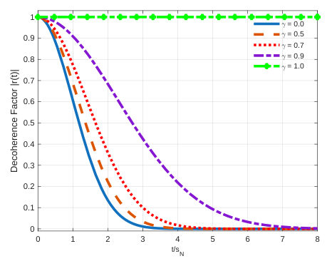
<figcaption class="paper-figure-caption"><b>Fig 1.</b> FIG. 1: Decoherence factor for different values of γ. For γ ∈[0, 1), the decoherence factor vanishes at t →∞on larger timescales as γ →1. At the PT -transition point (γ = 1), the decoherence factor becomes constant.</figcaption>
</figure>
<figure class="paper-figure-card">
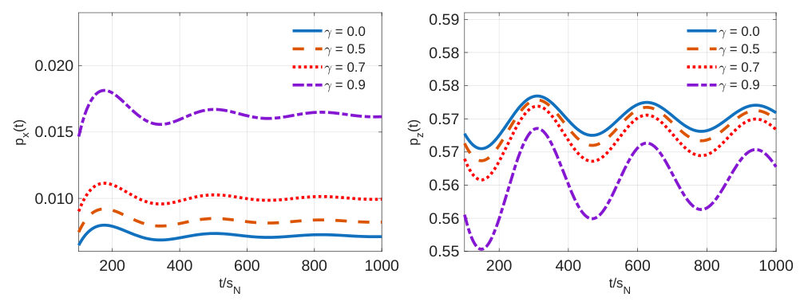
<figcaption class="paper-figure-caption"><b>Fig 2.</b> FIG. 2: Comparison of Bloch vector components px(t) and pz(t) for different values of γ when ω0/sN = 0.01, and px(0) = py(0) = pz(0) = 1/ √</figcaption>
</figure>
<figure class="paper-figure-card">
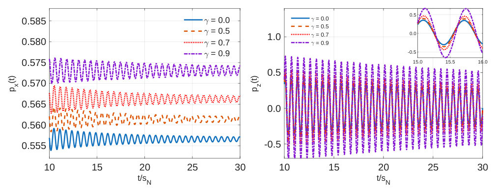
<figcaption class="paper-figure-caption"><b>Fig 3.</b> FIG. 3: Comparison of Bloch vector components px(t) and pz(t) for different values of γ when ω0/sN = 5, and px(0) = py(0) = pz(0) = 1/ √</figcaption>
</figure>
<figure class="paper-figure-card">
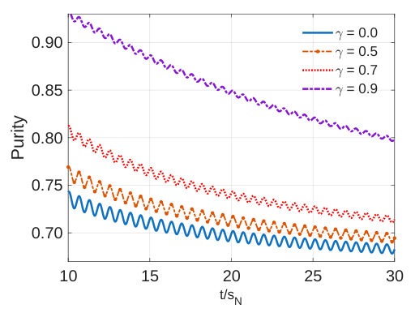
<figcaption class="paper-figure-caption"><b>Fig 4.</b> FIG. 4: Purity of the central spin states of the system in Figure (a) 2 and (b) Figure 3, respectively.</figcaption>
</figure>
<figure class="paper-figure-card">
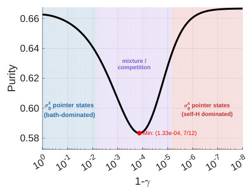
<figcaption class="paper-figure-caption"><b>Fig 5.</b> FIG. 5: Purity vs. 1 −γ for the system described in Figure 2.</figcaption>
</figure>
</div>

<p><strong>Summary.</strong> This paper explores how PT-symmetry influences the decoherence and memory effects of a central spin interacting with an environment. By using pseudo-Hermitian techniques, the authors show that tuning the symmetry parameter ($\gamma$) can effectively shield the system from noise, leading to predictable changes in coherence decay and non-Markovian behavior.</p>
<p><strong>Why it may be interesting.</strong> This work provides a concrete theoretical mechanism (PT-symmetry) to explain phenomena like environment-induced coherence freezing and information backflow saturation, which are crucial concepts in open quantum systems theory relevant to AMO physics.</p>
<details>
<summary>Detailed structure</summary>
<p><strong>Main problem.</strong> The study investigates how introducing PT-symmetry into a central spin model affects fundamental open quantum system dynamics, specifically decoherence, environment-induced selection (einselection), and non-Markovianity.</p>
<p><strong>Main result.</strong> Increasing the PT-symmetry parameter ($\gamma$) slows down decoherence until it ceases at $\gamma=1$, leading to einselection towards self-Hamiltonian eigenstates. The analysis reveals characteristic turning points in information backflow, indicating environmental shielding by the PT-symmetric structure.</p>
<p><strong>Method.</strong> The authors employ the pseudo-Hermitian formalism and apply a Dyson map to transform the non-Hermitian Hamiltonian into an equivalent Hermitian representation for analysis.</p>
<p><strong>Model / system.</strong> The system is a central spin model coupled to a bath (environment) via a PT-symmetric interaction Hamiltonian. The dynamics are analyzed by examining the time evolution of coherence, purity, and information flow measures.</p>
<p><strong>Key observables.</strong> Decoherence factor ($r(t)$), steady-state purity, Breuer-Laine-Piilo (BLP) measure for non-Markovianity, and information backflow.</p>
<p><strong>Important parameters / regimes.</strong> The PT-symmetry parameter $\gamma$, the self-Hamiltonian strength ($\omega_0$), and environmental coupling scales ($s_N$).</p>
<p><strong>Assumptions / limitations.</strong> The analysis relies on pseudo-Hermitian formalism techniques and approximations like the Gaussian approximation for the bath's characteristic function in certain regimes.</p>
<p><strong>Figures summary.</strong> Figures illustrate the decoherence factor $|r(t)|$ approaching 1 at $\gamma=1$, and show non-Markovianity measures (NBLP) exhibiting turning point behavior as a function of $\gamma$.</p>
<p><strong>Paper structure.</strong> The paper systematically analyzes the system by first establishing the pseudo-Hermitian framework, then calculating decoherence dynamics in different environmental regimes, followed by analyzing einselection effects and finally quantifying non-Markovianity via the BLP measure.</p>
</details>
<details>
<summary>Abstract</summary>
<p>We have introduced PT-symmetry to a central spin model by adding a PT-symmetric interaction with a tunable hermiticity parameter $γ$. Using the pseudo-Hermitian formalism, we applied a Dyson map to transform the non-Hermitian Hamiltonian to its Hermitian representation. We have found that the decoherence slows down as $γ$ increases, eventually ceasing at $γ=1$. We define a pseudo-Hermitian observable that commutes with the metric operator to add as the self-Hamiltonian. Einselection gradually forced the system to select the eigenstates of the self-Hamiltonian as $γ\rightarrow1$. The steady-state purity of the central spin states in the strong environment regime exhibits a paradoxical decrease as $γ$ increases. However, a turning point (minimum) corresponding to a maximum information dissipation to the spin bath is found. Finally, the Breuer-Laine-Piilo (BLP) measure, which is used to quantify the non-Markovianity of a quantum system, was evaluated for a finite time. The BLP measure in the strong environment regime exhibited similar turning point behavior, which means that the information backflow reaches a saturation point before declining. This decline signifies the point where PT-symmetry starts shielding the central spin from the environment.</p>
</details>
<p><sub><a href="#top">↑ back to top</a></sub></p>

<p><a id="paper-2607.24961"></a></p>
<h3 id="non-hermitian-entropy-production-from-fluctuation-theorems"><a href="http://arxiv.org/abs/2607.24961v1">Non-Hermitian entropy production from fluctuation theorems</a></h3>
<p><strong>Authors:</strong> Vasco Cavina, Frank Ernesto Quintela Rodríguez, Donato Farina<br>
<strong>Type:</strong> theory · <strong>Category:</strong> statistical mechanics · <strong>PDF:</strong> <a href="https://arxiv.org/pdf/2607.24961v1">https://arxiv.org/pdf/2607.24961v1</a><br>
<strong>Analysis basis:</strong> full PDF text, analyzed in chunks
<strong>Topic relevance:</strong> <code>driven-dissipative phase transition</code> <strong>3/5</strong> · <code>methods for driven-dissipative</code> <strong>3/5</strong> · <code>non-equilibrium dynamics</code> <strong>3/5</strong> · <code>Keldysh / 2PI / non-Gaussian methods</code> <strong>2/5</strong> · <code>correlated / nonlocal dissipation</code> <strong>2/5</strong> · <code>entanglement &amp; information structure</code> <strong>2/5</strong> · <code>non-equilibrium universality</code> <strong>2/5</strong> · <code>Kondo &amp; dissipative impurity</code> <strong>1/5</strong> · <code>analog quantum simulation</code> <strong>1/5</strong> · <code>correlated cavity matter</code> <strong>1/5</strong> · <code>measurement-induced transitions</code> <strong>1/5</strong></p>
<div class="figure-strip-hint">↔ Scroll figures horizontally</div>
<div class="paper-figures-scroll">
<figure class="paper-figure-card">
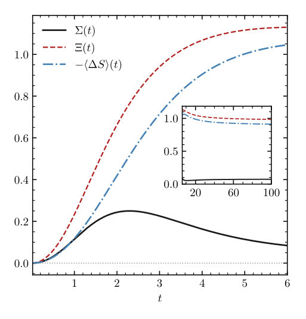
<figcaption class="paper-figure-caption"><b>Fig 1.</b> FIG. 1: Σ(t), Ξ(t), and −⟨∆S⟩(t) for the effective qubit model Eq. (26) at the right EP (∆= 0, J = γe/4), for the mixed input ρ = 1</figcaption>
</figure>
<figure class="paper-figure-card">
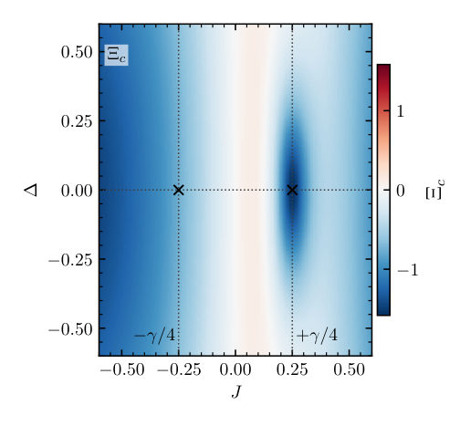
<figcaption class="paper-figure-caption"><b>Fig 2.</b> FIG. 2: Coherent contribution Ξc, Eq. (25), for the ef- fective qubit model Eq. (26), using the fixed right-EP input ρ = 1 2(1 + r(+) EP · σ), with r(+) EP = (0, 0.6, 0.8), γe = 1, and t = 3. The exceptional points ∆= 0, J = ±γe/4, are marked. The negative region near the right EP shows that coherent non-Hermitian mixing can reduce the fluctuation correction below the dissipative baseline, although the total correction remains nonnega- tive.</figcaption>
</figure>
</div>

<p><strong>Summary.</strong> This paper establishes a thermodynamic framework for non-Hermitian quantum evolution by defining an entropy production quantity based on post-selected fluctuation theorems. The authors derive a generalized second law ($\langle\Delta S
angle + \Xi \ge 0$) and show that the coherent part of this production exhibits unique signatures, particularly near exceptional points in the system's parameter space.</p>
<p><strong>Why it may be interesting.</strong> This work provides a rigorous thermodynamic interpretation for non-Hermitian quantum dynamics, linking concepts like entropy production and fluctuation theorems directly to spectral singularities (EPs), which is crucial for understanding open quantum systems.</p>
<details>
<summary>Detailed structure</summary>
<p><strong>Main problem.</strong> The authors develop a first-principles thermodynamic framework for non-Hermitian dynamics by identifying an entropy production quantity derived from a post-selected fluctuation theorem.</p>
<p><strong>Main result.</strong> They establish a second law analogue, $\langle\Delta S
angle + \Xi \ge 0$, and show that the coherent contribution to entropy production ($\Xi_c$) exhibits distinctive signatures near exceptional points (EPs).</p>
<p><strong>Method.</strong> The framework utilizes post-selection on fluctuation theorems, relating entropy production ($\Sigma$) to information-theoretic measures like Petz–Rényi divergences ($D_2$).</p>
<p><strong>Model / system.</strong> The analysis is primarily conducted using a paradigmatic two-level system (qubit) governed by an effective non-Hermitian Hamiltonian $H_{	ext{eff}}(t)$.</p>
<p><strong>Key observables.</strong> Entropy Production ($\Sigma$), Non-Hermitian Correction ($\Xi$), Average Entropy Variation ($\langle\Delta S
angle$), and the Coherent Contribution ($\Xi_c$).</p>
<p><strong>Important parameters / regimes.</strong> The analysis focuses on the behavior near Exceptional Points (EPs), where non-normality of the effective Hamiltonian becomes apparent.</p>
<p><strong>Assumptions / limitations.</strong> The framework relies fundamentally on post-selection, conditioning the dynamics on no jumps occurring during evolution.</p>
<p><strong>Figures summary.</strong> Figure 1 illustrates the time evolution of $\Sigma$, $\Xi$, and $-\langle\Delta S
angle$ for a qubit model at an EP. Figure 2 specifically plots the coherent contribution $\Xi_c$ near the EP, showing a strongly negative signature centered exactly at the EP location.</p>
<p><strong>Paper structure.</strong> The paper builds from deriving the formal definition of entropy production ($\Sigma$) using post-selected FTs, establishing its connection to relative entropies ($D_2$), and finally decomposing $\Sigma$ into incoherent and coherent parts to analyze EPs.</p>
</details>
<details>
<summary>Abstract</summary>
<p>We develop a first-principles thermodynamic framework for non-Hermitian dynamics based on a post-selected version of the fluctuation theorem. This allows us to identify a quantity that remains positive throughout the non-Hermitian evolution and can be interpreted as the entropy production of the post-selected dynamics. We relate this quantity to previously proposed notions of non-Hermitian entropy and derive an associated second law. Furthermore, we establish a connection with information-theoretic quantities, in particular the Petz-Rényi divergences, and leverage this connection to derive upper and lower bounds. Finally, we decompose the entropy production into incoherent and coherent contributions, identifying distinctive features of the coherent term in the vicinity of exceptional points. We illustrate our results using a paradigmatic model of non-Hermitian evolution based on a two-level system.</p>
</details>
<p><sub><a href="#top">↑ back to top</a></sub></p>

<p><a id="paper-2607.25306"></a></p>
<h3 id="loss-induced-anomalous-generalized-bunching-in-multiphoton-interference"><a href="http://arxiv.org/abs/2607.25306v1">Loss-induced anomalous generalized bunching in multiphoton interference</a></h3>
<p><strong>Authors:</strong> Rikizo Ikuta<br>
<strong>Type:</strong> theory · <strong>Category:</strong> other · <strong>PDF:</strong> <a href="https://arxiv.org/pdf/2607.25306v1">https://arxiv.org/pdf/2607.25306v1</a><br>
<strong>Analysis basis:</strong> full PDF text, analyzed in chunks
<strong>Topic relevance:</strong> <code>correlated / nonlocal dissipation</code> <strong>3/5</strong> · <code>driven-dissipative phase transition</code> <strong>3/5</strong> · <code>interference shaping light</code> <strong>3/5</strong> · <code>methods for driven-dissipative</code> <strong>3/5</strong> · <code>non-equilibrium universality</code> <strong>2/5</strong> · <code>Keldysh / 2PI / non-Gaussian methods</code> <strong>1/5</strong> · <code>entanglement &amp; information structure</code> <strong>1/5</strong> · <code>measurement-induced transitions</code> <strong>1/5</strong> · <code>non-equilibrium dynamics</code> <strong>1/5</strong> · <code>quantum measurements</code> <strong>1/5</strong></p>
<div class="figure-strip-hint">↔ Scroll figures horizontally</div>
<div class="paper-figures-scroll">
<figure class="paper-figure-card">
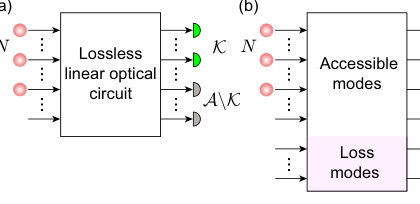
<figcaption class="paper-figure-caption"><b>Fig 1.</b> FIG. 1. (a) Standard generalized bunching setting. (b) Gen- eralized bunching setting considered in this paper, where the accessible modes are embedded in a larger mode space includ- ing loss modes. Only the accessible outputs in A are observed, while the loss outputs are discarded.</figcaption>
</figure>
<figure class="paper-figure-card">
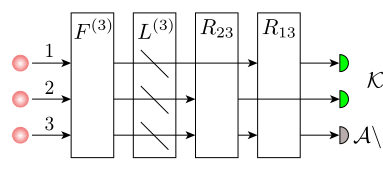
<figcaption class="paper-figure-caption"><b>Fig 2.</b> FIG. 2. The circuit in Eq. (20) with N = M = 3 and K = {1, 2}. The diagonal loss L(3) is placed inside the in- terferometer, before the final beamsplitter stages. For the N = 2 case, the third input mode is left empty.</figcaption>
</figure>
<figure class="paper-figure-card">
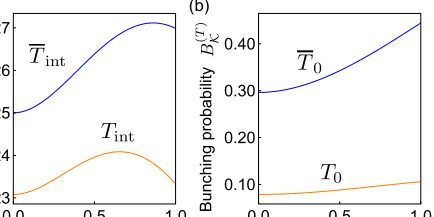
<figcaption class="paper-figure-caption"><b>Fig 3.</b> FIG. 3. (a) Conditional bunching probability for the full cir- cuit Tint = R13(π/8)R23(π/4)L(3)F (3). (b) For the circuit T0 = L(3)F (3) without the final beamsplitter rotations. The vertical scales are chosen independently in the two panels to make the variation with x visible.</figcaption>
</figure>
<figure class="paper-figure-card">
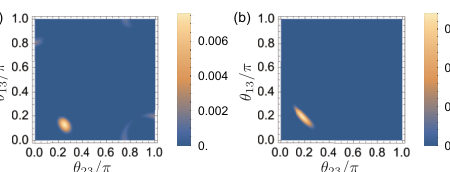
<figcaption class="paper-figure-caption"><b>Fig 4.</b> FIG. 5. Parameter regions for the generalized bunching anomaly in the three-photon circuit of the main text. The color plots show ∆(T ) K as a function of θ13 and θ23, with K = {1, 2}, η1 = 1/2, and η2 = 1/4. Positive values of ∆(T ) K indicate that B(T ) K (x) attains its maximum at partial distin-</figcaption>
</figure>
<figure class="paper-figure-card">
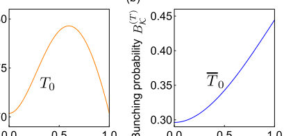
<figcaption class="paper-figure-caption"><b>Fig 5.</b> FIG. 4. (a) Conditional generalized bunching probability for the circuit T0 = L(3)F (3) with η1 = 1/3 and η2 = 1/6, show- ing a maximum at partial distinguishability. (b) Correspond- ing probability for the row-normalized matrix T 0 = F (3), which increases monotonically with x. The vertical scales are chosen independently in the two panels to make the variation with x visible.</figcaption>
</figure>
</div>

<p><strong>Summary.</strong> This paper theoretically analyzes anomalous generalized bunching in multiphoton interference within lossy linear optical circuits. It demonstrates that conditioning the measurement on photon survival fundamentally changes the expected correlation hierarchy compared to standard models. The key finding is that this anomaly can persist even after accounting for output-mode attenuation, pointing to an intrinsic nonunitary interference structure.</p>
<p><strong>Why it may be interesting.</strong> This work is highly relevant to quantum optics and open quantum systems because it provides a detailed theoretical understanding of how environmental coupling (loss) modifies fundamental quantum correlations, specifically generalized bunching, in ways that are not captured by simple unconditioned measurements.</p>
<details>
<summary>Detailed structure</summary>
<p><strong>Main problem.</strong> The research investigates anomalous generalized bunching phenomena occurring during multiphoton interference when internal loss mechanisms and survival conditioning are present in passive linear optical circuits.</p>
<p><strong>Main result.</strong> Survival conditioning fundamentally alters the minimal hierarchy of generalized bunching compared to unconditioned probabilities, leading to anomalies like nonmonotonic behavior maximized at partially distinguishable photon states.</p>
<p><strong>Method.</strong> The analysis employs a theoretical framework using conditional probability ratios ($B(T)_K(S)$) derived from transfer matrices describing lossy optical circuits. Mathematical proofs establish necessary and sufficient conditions for the anomaly's existence.</p>
<p><strong>Model / system.</strong> The system is modeled by passive linear optical circuits where $N$ photons interact via a unitary operator $\hat{U}$, followed by coupling to unobserved environmental (loss) modes, resulting in an accessible transfer matrix $T$.</p>
<p><strong>Key observables.</strong> Conditional bunching probability ($B(T)_K(S)$), which measures the target-region probability given that all photons survive.</p>
<p><strong>Important parameters / regimes.</strong> Number of photons ($N=2$ or $N=3$), degree of distinguishability ($x \in [0, 1]$), and parameters characterizing loss/interference ($\Delta_2, \Delta_3$, etc.).</p>
<p><strong>Assumptions / limitations.</strong> The analysis assumes the unitary transformation acts only on spatial modes without changing internal states; it distinguishes between external linear loss and mode-dependent output loss.</p>
<p><strong>Figures summary.</strong> Figures illustrate generalized bunching in both standard (unitary) and lossy settings, comparing results for $N=2$ and $N=3$. Specific figures compare anomalous vs. monotonic behavior under different circuit conditions.</p>
<p><strong>Paper structure.</strong> The paper progresses from establishing the formalism of conditional bunching probability in lossy circuits to analyzing specific cases ($N=2$, then $N=3$). It systematically proves that mode-dependent output loss can induce anomalies, and finally derives necessary mathematical conditions ($\Delta_2 > 0$ and $q(1) < 0$) for this anomaly to persist even after rigorous row normalization.</p>
</details>
<details>
<summary>Abstract</summary>
<p>We show that internal loss and survival conditioning can activate anomalous generalized bunching in passive linear optical circuits. We introduce a conditional bunching probability that all photons occupy a target region of accessible output modes, given that all photons survive. For two-photon inputs, we prove that this probability is always monotonic for any circuit size and loss configuration, although a multimode target region can reverse the monotonic direction. For three-photon inputs in a minimal three-mode lossy interferometer, we find a nonmonotonic anomaly in which the conditional bunching probability is maximized for partially distinguishable photons. This behavior is forbidden for the corresponding unconditioned target-region probability, demonstrating that survival-conditioned loss changes the minimal hierarchy of generalized bunching.</p>
</details>
<p><sub><a href="#top">↑ back to top</a></sub></p>

<p><a id="paper-2607.25806"></a></p>
<h3 id="kinetically-induced-order-from-mobility-constrained-excitations"><a href="http://arxiv.org/abs/2607.25806v1">Kinetically induced order from mobility-constrained excitations</a></h3>
<p><strong>Authors:</strong> Aprem P. Joy, Urban F. P. Seifert<br>
<strong>Type:</strong> theory · <strong>Category:</strong> strongly correlated electrons · <strong>PDF:</strong> <a href="https://arxiv.org/pdf/2607.25806v1">https://arxiv.org/pdf/2607.25806v1</a><br>
<strong>Analysis basis:</strong> full PDF text, analyzed in chunks
<strong>Topic relevance:</strong> <code>analog quantum simulation</code> <strong>3/5</strong> · <code>exotic spin models in light-matter</code> <strong>3/5</strong> · <code>Keldysh / 2PI / non-Gaussian methods</code> <strong>2/5</strong> · <code>Kondo &amp; dissipative impurity</code> <strong>2/5</strong> · <code>Frenkel-Kontorova</code> <strong>1/5</strong> · <code>correlated / nonlocal dissipation</code> <strong>1/5</strong> · <code>driven-dissipative phase transition</code> <strong>1/5</strong> · <code>entanglement &amp; information structure</code> <strong>1/5</strong> · <code>methods for driven-dissipative</code> <strong>1/5</strong> · <code>non-equilibrium dynamics</code> <strong>1/5</strong> · <code>non-equilibrium universality</code> <strong>1/5</strong> · <code>scars &amp; prethermalization</code> <strong>1/5</strong></p>
<div class="figure-strip-hint">↔ Scroll figures horizontally</div>
<div class="paper-figures-scroll">
<figure class="paper-figure-card">
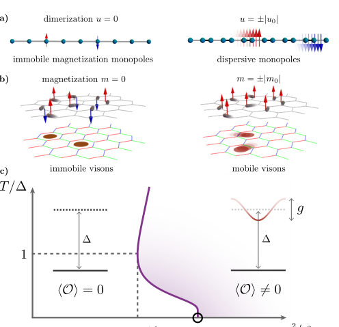
<figcaption class="paper-figure-caption"><b>Fig 1.</b> FIG. 1. (a) In a spin chain with a magnetization dipole con- servation law, a dimerization transition enables the mobil- ity of single-particle excitations. (b) Vison excitations of the emergent gauge field in the Kitaev spin liquid acquire a dis- persion when coupled to a magnetized conduction band. (c) Mean-field phase diagram: an order parameter ⟨O⟩activates the mobility of gapped excitations, yielding a kinetic energy gain ∝g⟨O⟩. Once this gain overcomes the cost of order- ing, symmetry breaking occurs. In the dilute regime, T ≪∆, thermally activated excitations thus favor ordering, leading to a decreasing critical coupling gc with increasing temperature [see Eq. (1)].</figcaption>
</figure>
<figure class="paper-figure-card">
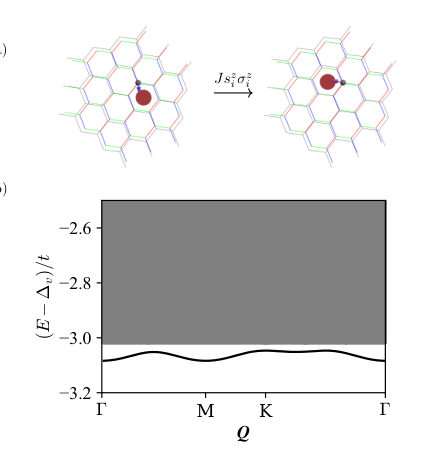
<figcaption class="paper-figure-caption"><b>Fig 2.</b> FIG. 2. (a) The Kondo interaction J⃗si · ⃗σi hops a vison, e.g., across a z-type bond (red) while simultaneously acting on the electron spin (arrow) with sz operator. (b) The en- ergy spectrum obtained by solving the effective vison-electron pair problem (see Supplemental Material [20] for details), as a function of the center-of-mass momentum Q. A bound state emerges below and above (not shown) the continuum (gray shaded region). Parameters used: t = 1, g = Jtv = 0.2.</figcaption>
</figure>
<figure class="paper-figure-card">
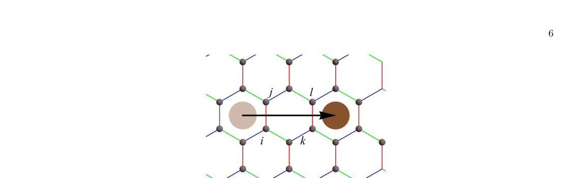
<figcaption class="paper-figure-caption"><b>Fig 3.</b> FIG. 1: Vison hopping process induced by next-nearest- and third-nearest-neighbor terms of the RKKY interaction (Eq. (30)). Four different hopping processes ˆT1 = σz i σz k, ˆT2 = σz i σz l , ˆT3 = σz j σz k, ˆT4 = σz j σz l contribute to the hopping (shown by arrow). The corresponding hopping matrix elements obtained by numerical calculation show t1 = −t4 and t2 = −t3.</figcaption>
</figure>
<figure class="paper-figure-card">
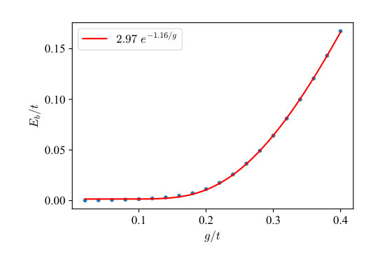
<figcaption class="paper-figure-caption"><b>Fig 4.</b> FIG. 2: Vison-electron bound state energy extracted from exact diagonalization of the two-particle Schrödinger equation within the center-of-mass momentum Q = 0 sector. The binding energy, as measured from the non-interacting band bottom, follows the exponential scaling expected for a weak interaction in 2d, as shown by the fitted curve (red). Here, we have considered a finite-size cluster of 30 × 30 sites.</figcaption>
</figure>
</div>

<p><strong>Summary.</strong> This paper reveals that symmetry-breaking long-range order can emerge kinetically when excitations are initially constrained by symmetries. By coupling the system to an order parameter field, these constraints are lifted, allowing excitations to gain kinetic energy that stabilizes the ordered phase. The mechanism is successfully applied to both spin chains and itinerant magnetism in the Kitaev-Kondo model.</p>
<p><strong>Why it may be interesting.</strong> The concept of order being driven by kinetic energy gain rather than purely minimizing potential energy is a powerful general mechanism applicable to many quantum systems, including those studied in AMO physics (e.g., superfluid transitions or Bose-Einstein condensation).</p>
<details>
<summary>Detailed structure</summary>
<p><strong>Main problem.</strong> The study investigates how kinetic energy gain from excitations, particularly those initially constrained by symmetries, can drive a symmetry-breaking phase transition into a state with long-range order.</p>
<p><strong>Main result.</strong> This mechanism is demonstrated in both spin chains (dimerization instability) and the Kitaev-Kondo model, showing that finite density of mobile excitations can stabilize ordered phases, even counterintuitively promoting order at higher temperatures.</p>
<p><strong>Method.</strong> The analysis employs mean-field theory, perturbation theory in small coupling constants, and free energy functional minimization to track the stability boundaries driven by kinetic energy contributions.</p>
<p><strong>Model / system.</strong> The work analyzes two primary models: (i) a spin chain with dipole conservation coupled to lattice distortions, and (ii) the Kitaev-Kondo model involving itinerant electrons interacting with local moments forming a spin liquid. The Hamiltonian includes terms for hopping, magnetic coupling, and interaction.</p>
<p><strong>Key observables.</strong> Dimerization order parameter ($\langle u 
angle$), spontaneous magnetization ($\vec{m}$), and the critical coupling strength ($g_c$ or $J_{c,0}$) required to induce ordering.</p>
<p><strong>Important parameters / regimes.</strong> Coupling constants ($g$, $J$), temperature ($T$), excitation gap ($\Delta v$), and density of excitations.</p>
<p><strong>Assumptions / limitations.</strong> The analysis relies on mean-field approximations for the order parameter fields (e.g., lattice distortion or local magnetization) and perturbative expansions in small coupling strengths.</p>
<p><strong>Figures summary.</strong> Figures illustrate how dimerization activates mobility in a spin chain, show vison dispersion upon coupling to a magnetized band, and present phase diagrams mapping kinetic energy gain against order parameters.</p>
<p><strong>Paper structure.</strong> The paper develops the general mechanism first, applying it sequentially to two distinct physical realizations: the 1D spin chain instability, followed by the more complex 2D Kitaev-Kondo model analysis involving vison excitations and free energy calculations at finite temperature.</p>
</details>
<details>
<summary>Abstract</summary>
<p>A fascinating feature of strongly correlated systems is that excitations may carry nontrivial quantum numbers under emergent symmetries which, in some cases, may strongly constrain their motion. We show that such constrained excitations can play a central role in driving symmetry-breaking long-range order through a kinetic mechanism: coupling to a local order-parameter field activates the mobility of otherwise constrained excitations, and condensation of the order parameter then enables a large gain in kinetic energy, thereby stabilizing a phase with long-range order. We illustrate this mechanism in two settings: (i) a dimerization instability in a spin chain with a magnetization dipole conservation law, and (ii) itinerant magnetism of electrons in the Kitaev-Kondo model, where charge carriers couple to local moments that form a spin liquid. This mechanism becomes operative whenever a finite density of mobility-constrained excitations is present, either through non-equilibrium preparation or thermal activation. In the latter case, we argue that increasing temperature can, counterintuitively, promote order by enhancing the kinetic-energy gain of thermally activated excitations.</p>
</details>
<p><sub><a href="#top">↑ back to top</a></sub></p>

<p><a id="paper-2607.25030"></a></p>
<h3 id="phase-transitions-and-order-parameters-in-correlation-matrices-a-wishart-ensemble-perspective-on-the-largest-eigenvalue"><a href="http://arxiv.org/abs/2607.25030v1">Phase Transitions and Order Parameters in Correlation Matrices: A Wishart-Ensemble Perspective on the Largest Eigenvalue</a></h3>
<p><strong>Authors:</strong> Roberto da Silva, Antonio Mihara, Henrique Tramontina, Sandra D. Prado<br>
<strong>Type:</strong> theory · <strong>Category:</strong> statistical mechanics · <strong>PDF:</strong> <a href="https://arxiv.org/pdf/2607.25030v1">https://arxiv.org/pdf/2607.25030v1</a><br>
<strong>Analysis basis:</strong> full PDF text, analyzed in chunks
<strong>Topic relevance:</strong> <code>driven-dissipative phase transition</code> <strong>3/5</strong> · <code>methods for driven-dissipative</code> <strong>3/5</strong> · <code>non-equilibrium universality</code> <strong>3/5</strong> · <code>analog quantum simulation</code> <strong>2/5</strong> · <code>entanglement &amp; information structure</code> <strong>2/5</strong> · <code>non-equilibrium dynamics</code> <strong>2/5</strong> · <code>Frenkel-Kontorova</code> <strong>1/5</strong> · <code>Keldysh / 2PI / non-Gaussian methods</code> <strong>1/5</strong> · <code>correlated / nonlocal dissipation</code> <strong>1/5</strong></p>
<div class="figure-strip-hint">↔ Scroll figures horizontally</div>
<div class="paper-figures-scroll">
<figure class="paper-figure-card">
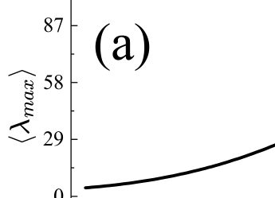
<figcaption class="paper-figure-caption"><b>Fig 1.</b> FIG. 1. Monitoring of ⟨λmax⟩, D (∆λ)2E , and d⟨λmax⟩</figcaption>
</figure>
<figure class="paper-figure-card">

<figcaption class="paper-figure-caption"><b>Fig 2.</b> FIG. 2. Gaussian and skew-normal fits for the different temperatures.</figcaption>
</figure>
<figure class="paper-figure-card">

<figcaption class="paper-figure-caption"><b>Fig 3.</b> FIG. 3. Spectral characterization of the transition to chaos using λmax. Panel (a) shows the behavior of</figcaption>
</figure>
<figure class="paper-figure-card">

<figcaption class="paper-figure-caption"><b>Fig 4.</b> FIG. 4. Gaussian and skew-normal fits for the different values of r.</figcaption>
</figure>
</div>

<p><strong>Summary.</strong> This work proposes using the largest eigenvalue ($\lambda_{	ext{max}}$) of empirical correlation matrices as a universal, model-independent order parameter for detecting phase transitions. By analyzing how $\lambda_{	ext{max}}$ and its derivatives deviate from random matrix predictions (Wishart ensemble), the authors successfully identify critical points in both equilibrium spin systems and chaotic dynamical maps.</p>
<p><strong>Why it may be interesting.</strong> While focused on classical statistical mechanics, the methodology—using spectral properties of correlation matrices to detect critical points—is highly relevant to characterizing quantum phase transitions where entanglement or correlations drive the transition. The concept of an 'order parameter' derived from matrix spectra is a powerful general tool.</p>
<details>
<summary>Detailed structure</summary>
<p><strong>Main problem.</strong> The study investigates using the largest eigenvalue of correlation matrices as an effective, model-independent order parameter to detect phase transitions in complex physical systems.</p>
<p><strong>Main result.</strong> The behavior of $\lambda_{	ext{max}}$—specifically inflection points or maxima in its derivatives—successfully tracks known phase transitions (e.g., Ising model) and dynamical bifurcations (logistic map).</p>
<p><strong>Method.</strong> The analysis relies on Random Matrix Theory, specifically analyzing the largest eigenvalue ($\lambda_{	ext{max}}$) of matrices drawn from Wishart ensembles.</p>
<p><strong>Model / system.</strong> The method is applied to both equilibrium systems like the 2D Ising model and non-equilibrium dynamical systems like the logistic map. The core mathematical tool involves constructing empirical covariance matrices $C = rac{1}{T} X X^T$.</p>
<p><strong>Key observables.</strong> Largest eigenvalue ($\lambda_{	ext{max}}$), its mean $\langle\lambda_{	ext{max}}
angle$, and its derivatives with respect to control parameters.</p>
<p><strong>Important parameters / regimes.</strong> Temperature ($k_B T/J$) for the Ising model, or the bifurcation parameter ($r$) for the logistic map.</p>
<p><strong>Assumptions / limitations.</strong> The connection between $rac{d\lambda_{  ext{max}}}{d(   ext{parameter})}$ and thermodynamic response functions is noted as being an empirical analogy, not a guaranteed theoretical link to critical divergence.</p>
<p><strong>Figures summary.</strong> Figures show how $\langle\lambda_{	ext{max}}
angle$ exhibits sharp variations or inflection points near critical parameters (e.g., $T_c \approx 2.27$ for Ising), accompanied by maxima in variance and derivatives.</p>
<p><strong>Paper structure.</strong> The paper establishes the theoretical framework using Wishart ensembles, applies this diagnostic tool to specific physical models (Ising/logistic map), analyzes spectral statistics against RMT predictions (Marchenko-Pastur), and concludes with empirical evidence of its utility as a universal indicator for structural changes.</p>
</details>
<details>
<summary>Abstract</summary>
<p>We investigate the properties of the largest eigenvalue of correlation matrices within the framework of Wishart ensembles. In this work, we propose the largest eigenvalue as an effective empirical order parameter for detecting phase transitions in chaotic and spin systems, drawing an analogy between its derivatives and thermodynamic response functions derived from the free energy, however not necessarily linked to a critical divergence originally observed in the context of phase transitions theory.</p>
</details>
<p><sub><a href="#top">↑ back to top</a></sub></p>

<p><a id="paper-2607.25109"></a></p>
<h3 id="exceptional-point-braiding-with-native-controls"><a href="http://arxiv.org/abs/2607.25109v1">Exceptional-point braiding with native controls</a></h3>
<p><strong>Authors:</strong> Vishnu Chavva, Nero Osmancevic, Hugo Ribeiro<br>
<strong>Type:</strong> theory · <strong>Category:</strong> other · <strong>PDF:</strong> <a href="https://arxiv.org/pdf/2607.25109v1">https://arxiv.org/pdf/2607.25109v1</a><br>
<strong>Analysis basis:</strong> full PDF text, analyzed in chunks
<strong>Topic relevance:</strong> <code>driven-dissipative phase transition</code> <strong>3/5</strong> · <code>methods for driven-dissipative</code> <strong>3/5</strong> · <code>QC/QI experiment</code> <strong>2/5</strong> · <code>non-equilibrium dynamics</code> <strong>2/5</strong> · <code>non-equilibrium universality</code> <strong>2/5</strong> · <code>Kondo &amp; dissipative impurity</code> <strong>1/5</strong> · <code>analog quantum simulation</code> <strong>1/5</strong> · <code>correlated / nonlocal dissipation</code> <strong>1/5</strong> · <code>measurement-induced transitions</code> <strong>1/5</strong></p>
<div class="figure-strip-hint">↔ Scroll figures horizontally</div>
<div class="paper-figures-scroll">
<figure class="paper-figure-card">

<figcaption class="paper-figure-caption"><b>Fig 1.</b> Figure 1. Partial local cancellation with a full-cycle flow constraint. a, The dashed grey loop encircles an ex- ceptional point and defines the target endpoint map. The constrained-control protocol uses a modified native-control loop, shown in orange, with the same endpoint Hamilto- nians. Red arrows indicate residual interaction-picture dy- namics that remains during the protocol but has zero net accumulated effect over the full cycle. b, In the dressed instantaneous-eigenstate frame, the unwanted coupling de- composes into an accessible component inside the native- control manifold, shown in green, and an inaccessible residual component, shown in red. Only the accessible component can be...</figcaption>
</figure>
<figure class="paper-figure-card">

<figcaption class="paper-figure-caption"><b>Fig 2.</b> Figure 2. Performance across loop duration and base point. a, Final state-transfer error εi,i(t0) as a function of loop duration for the two initial instantaneous eigenstates. Grey and black points show uncontrolled dynamics; blue and orange points show the constrained-control protocol. b, Final state-transfer error as a function of the loop base point φ for fixed loop duration (Γ0t0 = 5). Low state-transfer error is maintained across base points, demonstrating that the proto- col does not rely on a specially chosen starting point on the loop.</figcaption>
</figure>
<figure class="paper-figure-card">

<figcaption class="paper-figure-caption"><b>Fig 3.</b> Figure 3. Real control waveforms and constrained loop dynamics. a, Numerically determined dressing angles µx(t) and µz(t) satisfying the full-cycle flow constraint for Γ0t0 = 10. b, Instantaneous-eigenstate populations during the loop for uncontrolled and constrained-control dynamics. c, Real laboratory-frame corrections gx(t) and gz(t). d, Bare and modified trajectories in the (∆, Ω) plane, with exceptional points marked by red dots and the loop base point by a pur- ple pentagon. The modified trajectory remains within the assumed real-control manifold. Because the correction fields vanish at the endpoints, the bare and controlled Hamiltonians coincide there and share the same initial and...</figcaption>
</figure>
<figure class="paper-figure-card">

<figcaption class="paper-figure-caption"><b>Fig 4.</b> Figure 4. Robustness and control overhead. a,b, Final state-transfer error ⟨εi,i(t0)⟩averaged over static detuning offsets for two loop base points. c, RMS-amplitude overhead of the constrained-control waveform relative to the uncorrected loop. d, Absolute 99% bandwidth and bandwidth overhead. e, Branch-averaged final state-transfer error ¯ε(t0) = [ε1,1(t0) + ε2,2(t0)]/2 after propagating with a shifted value of Γ0, modelling uncertainty in the inferred exceptional-point position. f, The same branch-averaged error for an independent finite-bandwidth test, where only the target controls are low-pass filtered with cutoff ωc and Γ0 is not shifted.</figcaption>
</figure>
<figure class="paper-figure-card">

<figcaption class="paper-figure-caption"><b>Fig 5.</b> Figure 1. Coherent controls for a representative loop. (a) Dressing angles µx(t) andµz(t). (b) Branch-transition prob- abilities in the holomorphically continued instantaneous-eigenstate frame for uncontrolled and constrained-control dynamics. (c) Native laboratory-frame controls gx(t) and gz(t), which vanish at the protocol boundaries. (d) Uncorrected and coherent controlled trajectories in the(∆, Ω) plane.</figcaption>
</figure>
</div>

<p><strong>Summary.</strong> The paper addresses the difficulty of dynamically realizing state transfers defined by exceptional-point braiding using only native experimental controls. The authors propose a novel constrained shortcut-to-adiabaticity principle that relaxes strict instantaneous cancellation requirements. This method successfully guides the system to the correct target endpoint state transfer while remaining robust against realistic experimental imperfections.</p>
<p><strong>Why it may be interesting.</strong> This work provides a concrete, physically realizable recipe for controlling non-Hermitian quantum dynamics near EPs by modifying standard adiabatic theorems to account for limited control access, which is highly relevant for superconducting circuit implementations of topological quantum computation.</p>
<details>
<summary>Detailed structure</summary>
<p><strong>Main problem.</strong> The primary challenge is realizing dynamic state transfers dictated by exceptional-point (EP) braiding using only experimentally accessible, native controls.</p>
<p><strong>Main result.</strong> The authors propose a constrained shortcut-to-adiabaticity principle that successfully reproduces the target endpoint state transfer while remaining robust to experimental imperfections like calibration errors and bandwidth limitations.</p>
<p><strong>Method.</strong> They introduce a protocol involving partial local cancellation of coupling channels combined with a full-cycle constraint on the residual interaction-picture flow, rather than enforcing complete instantaneous adiabatic following.</p>
<p><strong>Model / system.</strong> The method is demonstrated using a minimal two-mode non-Hermitian model equivalent to the effective Hamiltonian used in dissipative-transmon exceptional-point experiments. The system dynamics are governed by time-dependent detuning ($\Delta(t)$) and drive amplitude ($\Omega(t)$), with loss imbalance fixing the non-Hermitian scale.</p>
<p><strong>Key observables.</strong> State-transfer error ($\epsilon_{i,j}(t)$), transition probabilities ($P_{i,j}(t)$), and the residual interaction-picture flow ($\hat{\Phi}_I(t_0)$).</p>
<p><strong>Important parameters / regimes.</strong> Detuning $\Delta(t)$, drive amplitude $\Omega(t)$, relative loss imbalance ($\Gamma_0$), and the duration of the braiding loop ($t_0$).</p>
<p><strong>Assumptions / limitations.</strong> The available laboratory controls only span a partial set of the full dressed-frame coupling channels, necessitating the partial cancellation strategy.</p>
<p><strong>Figures summary.</strong> Figures illustrate the comparison between ideal/uncontrolled vs. constrained dynamics (showing reduced state-transfer error), and show representative waveforms for dressing angles, native control fields ($g_x(t), g_z(t)$) that vanish at boundaries, and trajectories in the $(\Delta, \Omega)$ plane.</p>
<p><strong>Paper structure.</strong> The paper first establishes the limitations of standard adiabatic methods near EPs. It then introduces the constrained STA principle by analyzing the dressed-frame Hamiltonian, deriving necessary conditions for local cancellation and full-cycle flow constraints. Finally, it demonstrates the protocol's success via numerical simulation and robustness testing.</p>
</details>
<details>
<summary>Abstract</summary>
<p>Exceptional points define branch-exchange state transfers through holomorphic continuation of non-Hermitian eigenmodes, but realizing these transfers dynamically remains difficult. Slow encircling does not generally transport the full set of instantaneous eigenstates, while shortcuts to adiabaticity can require controls outside the native experimental manifold. Here, we introduce a constrained shortcut-to-adiabaticity principle for exceptional-point braiding using native controls. In a dressed instantaneous-eigenstate frame, the available controls cancel the accessible transition channels locally, while the residual channels remain active during the evolution but are constrained to have no net accumulated effect over the closed loop. The protocol therefore targets the endpoint state transfer selected by ideal adiabatic branch exchange, rather than enforcing complete local cancellation or adiabatic following throughout the trajectory. We demonstrate the construction in a minimal two-mode non-Hermitian model equivalent, up to a trace shift and a basis convention, to the effective Hamiltonian used in dissipative-transmon exceptional-point experiments, where detuning and drive amplitude provide real controls and the relative loss imbalance fixes the non-Hermitian scale. Smooth real waveforms reshape only these controls, reproduce the branch-exchange transfer, and remain accurate under calibration errors, exceptional-point uncertainty and finite-bandwidth filtering with modest overhead.</p>
</details>
<p><sub><a href="#top">↑ back to top</a></sub></p>

<p><a id="paper-2607.25263"></a></p>
<h3 id="low-temperature-magnetoresistance-hysteresis-in-granular-cr1-xfexo2-slow-relaxation-of-transport-active-magnetic-configurations"><a href="http://arxiv.org/abs/2607.25263v1">Low-Temperature Magnetoresistance Hysteresis in Granular Cr1-xFexO2: Slow Relaxation of Transport-Active Magnetic Configurations</a></h3>
<p><strong>Authors:</strong> E. Yu. Beliayev, V. A. Horielyi, I. G. Mirzoiev, V. V. Andrievskii<br>
<strong>Type:</strong> both · <strong>Category:</strong> disordered systems and neural networks · <strong>PDF:</strong> <a href="https://arxiv.org/pdf/2607.25263v1">https://arxiv.org/pdf/2607.25263v1</a><br>
<strong>Analysis basis:</strong> full PDF text, analyzed in chunks
<strong>Topic relevance:</strong> <code>non-equilibrium dynamics</code> <strong>3/5</strong> · <code>spintronics-quantum-optics interface</code> <strong>3/5</strong> · <code>driven-dissipative phase transition</code> <strong>2/5</strong> · <code>non-equilibrium universality</code> <strong>2/5</strong> · <code>Kondo &amp; dissipative impurity</code> <strong>1/5</strong> · <code>analog quantum simulation</code> <strong>1/5</strong> · <code>correlated / nonlocal dissipation</code> <strong>1/5</strong> · <code>exotic spin models in light-matter</code> <strong>1/5</strong> · <code>methods for driven-dissipative</code> <strong>1/5</strong> · <code>scars &amp; prethermalization</code> <strong>1/5</strong></p>
<div class="figure-strip-hint">↔ Scroll figures horizontally</div>
<div class="paper-figures-scroll">
<figure class="paper-figure-card">

<figcaption class="paper-figure-caption"><b>Fig 1.</b> Figure 1. Low-field magnetoresistance hysteresis of a compacted CrO₂ powder composed of acicular particles at 4.4, 10.0, and 20.0 K. Filled and open symbols denote opposite field-sweep directions. At 4.4 K, several extrema and repeated branch crossings replace the conventional pair of broad resistance maxima. Data from Ref. [7].</figcaption>
</figure>
<figure class="paper-figure-card">

<figcaption class="paper-figure-caption"><b>Fig 2.</b> Figure 2 compares the undoped and Fe-containing powders at 4.25 K. Both specimens exhibit the conventional low-field resistance maxima near ±Hp, together with an additional crossing of the ascending and descending branches at somewhat higher fields. In the Fe-containing specimen, however, the magnetoresistance becomes strongly nonmonotonic over a much wider field interval extending towards 1.5 T. After the resistance reaches an intermediate-field minimum, it increases again with increasing | μ0H |. At still higher fields, the two branches approach each other and the resistance begins to decrease once more. The intermediate-field region is therefore characterized by a pronounced history-...</figcaption>
</figure>
<figure class="paper-figure-card">

<figcaption class="paper-figure-caption"><b>Fig 3.</b> Figure 2. Magnetoresistance loops of undoped CrO2 (open symbols) and Fe-containing Cr1₋xFexO2 (filled symbols) at 4.25 K and a field-sweep rate of approximately 0.021 T·s⁻¹. (a) Full field range; (b) enlarged low-field region around the resistance maxima at ±Hp. Data from Ref. [10].</figcaption>
</figure>
<figure class="paper-figure-card">

<figcaption class="paper-figure-caption"><b>Fig 4.</b> Figure 3 shows the magnetoresistance loops of the Fe-containing specimen measured at different magnetic-field sweep rates. At ʋ = 0.25 T s⁻¹, the resistance reaches a pronounced minimum only at fields close to 1 T and then increases again over a broad field interval. As the sweep rate is reduced, the minimum shifts towards lower | μ0H |, becomes less pronounced, and the separation between the branches decreases. At the lowest rate, ʋ = 0.0029 T·s-1, only a weak shoulder remains and the subsequent resistance recovery is barely resolved.</figcaption>
</figure>
<figure class="paper-figure-card">

<figcaption class="paper-figure-caption"><b>Fig 5.</b> Figure 3. Sweep-rate dependence of the magnetoresistance hysteresis in the Fe-containing Cr1₋xFexO2 powder at 4.25 K and a measuring current of 100 μA. (a) ʋ = 0.25 T·s-1 (open circles), 0.125 T·s-1 (filled circles), and 0.037 T·s-1 (open squares); (b) ʋ = 0.0029 T·s-1. At the lowest sweep rate, the intermediate- field resistance minimum is reduced to a weak shoulder and the subsequent resistance recovery is barely resolved. Data from Ref. [10].</figcaption>
</figure>
</div>

<p><strong>Summary.</strong> This work analyzes the complex magnetoresistance hysteresis in granular $  ext{Cr}<em MT>{1-x}   ext{Fe}_x   ext{O}_2$ at low temperatures. By measuring how the MR loops change with the rate of magnetic field sweeping, the authors extracted a slow relaxation time scale ($ au</em> \approx 3$ s). This suggests that the unusual electrical response is governed not by fast spin dynamics, but by the sluggish reconfiguration of local magnetic moments at critical intergranular contacts.</p>
<p><strong>Why it may be interesting.</strong> The concept of transport-weighted dynamics, where slow magnetic relaxation dictates measurable electrical properties in disordered granular media, provides an experimental realization of non-equilibrium physics relevant to open quantum systems and glassy dynamics.</p>
<details>
<summary>Detailed structure</summary>
<p><strong>Main problem.</strong> The study investigates the origin of complex, nonmonotonic magnetoresistance (MR) hysteresis observed at low temperatures in granular magnetic oxides.</p>
<p><strong>Main result.</strong> The unusual hysteretic behavior is attributed to a slow relaxation process ($  au_{MT} \approx 3$ s) governing local moment and domain configurations within transport-critical intergranular contacts.</p>
<p><strong>Method.</strong> The authors reanalyzed MR data, focusing on the dependence of resistance extrema positions on the magnetic field sweep rate ($
u$) to extract an effective relaxation time scale.</p>
<p><strong>Model / system.</strong> The system is granular $    ext{Cr}_{1-x}   ext{Fe}_x   ext{O}_2$ powder where electrical transport occurs through a sparse network of tunneling junctions between magnetic grains. The physics involves coupling slow, history-dependent local magnetic relaxation to the measured macroscopic resistance.</p>
<p><strong>Key observables.</strong> Nonmonotonic MR loop shape, field shift of intermediate-field minima ($\mu_0H_{\min}(R)$), and the effective magnetotransport relaxation time ($  au_{MT}$).</p>
<p><strong>Important parameters / regimes.</strong> Low temperatures (e.g., 4.25 K), magnetic field sweep rate ($
u$), and the derived relaxation time scale ($    au_{MT} \approx 3$ s).</p>
<p><strong>Assumptions / limitations.</strong> The measured resistance is strongly weighted by a small subset of 'transport-active' contacts, allowing the slow dynamics to manifest macroscopically. The MR can be modeled as a sum of fast and slowly relaxing contributions.</p>
<p><strong>Figures summary.</strong> Figures show low-field MR hysteresis loops at varying temperatures and field sweep rates; one figure compares undoped vs. Fe-containing samples, highlighting enhanced nonmonotonicity with Fe doping.</p>
<p><strong>Paper structure.</strong> The paper progresses from observing complex MR features to quantifying the rate dependence of these features ($\mu_0H_{\min}(R)$ shift $\propto 
u$), leading to the extraction of a characteristic relaxation time scale ($    au_{MT}$), and finally modeling this behavior using kinetic equations.</p>
</details>
<details>
<summary>Abstract</summary>
<p>Low-temperature magnetoresistance loops of compacted CrO2 powders become strongly nonmonotonic when electrical transport is dominated by a small number of spin-dependent intergranular tunnelling paths. We reanalyse previously reported data for undoped CrO2 and Fe-containing Cr1-xFexO2, focusing on additional branch crossings beyond the conventional low-field hysteresis. In the Fe-containing specimen, the resistance decreases, passes through a minimum, rises over an extended field interval, and then decreases again at higher field. This nonmonotonic hysteretic feature is strongly reduced when the magnetic-field sweep is slowed. Digitization of the three fastest sweeps shows that the field at which the resistance starts to recover shifts approximately linearly with sweep rate, corresponding to an effective magnetotransport relaxation time of about 3 s. This scale is attributed not to microscopic spin flips but to the slow evolution of local moment and domain configurations at the intergranular contacts dominating the current. The observations are consistent with conventional negative tunnelling magnetoresistance superimposed on a slower resistance-increasing contribution associated with transient local magnetic disorder. Fe increases coercivity and interfacial magnetic heterogeneity while reducing the overall negative magnetoresistance. The results support a transport-weighted magnetic-reconfiguration mechanism for the unusual hysteresis shape.</p>
</details>
<p><sub><a href="#top">↑ back to top</a></sub></p>

<p><a id="paper-2607.25279"></a></p>
<h3 id="many-body-tipping-dynamics-of-chatgpt-like-ais"><a href="http://arxiv.org/abs/2607.25279v1">Many-body Tipping Dynamics of ChatGPT-like AIs</a></h3>
<p><strong>Authors:</strong> Frank Yingjie Huo, Neil F. Johnson<br>
<strong>Type:</strong> theory · <strong>Category:</strong> disordered systems and neural networks · <strong>PDF:</strong> <a href="https://arxiv.org/pdf/2607.25279v1">https://arxiv.org/pdf/2607.25279v1</a><br>
<strong>Analysis basis:</strong> full PDF text, analyzed in chunks
<strong>Topic relevance:</strong> <code>driven-dissipative phase transition</code> <strong>3/5</strong> · <code>methods for driven-dissipative</code> <strong>3/5</strong> · <code>non-equilibrium dynamics</code> <strong>2/5</strong> · <code>non-equilibrium universality</code> <strong>2/5</strong> · <code>Frenkel-Kontorova</code> <strong>1/5</strong> · <code>Keldysh / 2PI / non-Gaussian methods</code> <strong>1/5</strong> · <code>analog quantum simulation</code> <strong>1/5</strong> · <code>correlated / nonlocal dissipation</code> <strong>1/5</strong> · <code>entanglement &amp; information structure</code> <strong>1/5</strong> · <code>exotic spin models in light-matter</code> <strong>1/5</strong></p>
<div class="figure-strip-hint">↔ Scroll figures horizontally</div>
<div class="paper-figures-scroll">
<figure class="paper-figure-card">

<figcaption class="paper-figure-caption"><b>Fig 1.</b> FIG. 1. (a) Tipping to a repeated output in full GPT-2 (top); without MLP (middle); and Attention only (bottom). This shows Attention is sufficient to generate tipping. MLP/LN can then reshape its realization by changing words and possibly shifting the tipping point, but they do not remove the pure-Attention tipping mechanism. (b) At each layer t, Attention generates spin-spin interactions (H(t)) while W(t) V transforms each spin. (c) ℓ-layer pathway expansion: each layer either skips or interacts, yielding 2ℓordered pathways and the propagator in Eq. (1). (d) Real GPT examples show this tipping effect scaling up to tipping of meaning at the sentence level: see End Matter for...</figcaption>
</figure>
<figure class="paper-figure-card">

<figcaption class="paper-figure-caption"><b>Fig 2.</b> FIG. 2. (a) Schematic of five causal positions in an ℓ= 12 layer system with 1 head per layer and 3 spins (3 tokens, or coarse-grained sentence-scale tokens as in Fig. 1(d); see End Matter): {A, B, D}. Circled cells denote tipping points. (b) High-dimensional spins shown in a plane for visual clarity. Each colored locus traces the trajectory of the last input token spin (so-called residual stream) at layer t across causal positions n = 1, . . . , 10, and hence what token it would predict next at a given layer depth. Diamond markers indicate tipping points where the predicted token switches from B to D. Dashed line is the analytically derived tipping boundary. (c) Iteration view: alignment...</figcaption>
</figure>
<figure class="paper-figure-card">

<figcaption class="paper-figure-caption"><b>Fig 3.</b> FIG. 3. Attention disorder measured empirically in GPT-2 across a corpus of n = 360 controlled prompts. (a) Normalized column entropy ¯S(t) of the Frobenius mean-field Attention ¯H(t) (see End Matter, Sec. D), plotted against layer t for full GPT-2 and its simplifications. Faint traces are per-prompt full GPT-2 results. Full GPT-2 and Attention-only saturate toward the low-disorder limit with depth, except at readout layer 12; the Attention+LN model instead stays near the high-disorder limit, matching the two-limit theory. The same low-disorder saturation of ¯S(t) with depth recurs in Pythia-160M and across the GPT-2 size ladder (24, 36, and 48 layers), with Pythia-160M’s Attention+LN...</figcaption>
</figure>
<figure class="paper-figure-card">

<figcaption class="paper-figure-caption"><b>Fig 4.</b> Figure 2(f) tests the theory’s regime predictions across GPT-2, GPT-2-medium, Pythia-160M, Pythia-410M, Pythia-12B, OPT-125M, and OPT-350M. Fixed B-type and D-type probe phrases define empirical basin centroids, while the current continuation or sentence block defines C; all are measured in the same penultimate residual-stream space. The tested coordinate, x = C·(D−B), is therefore a prescribed geometric projection rather than a trained</figcaption>
</figure>
</div>

<p><strong>Summary.</strong> This work models the internal workings of large language models as interacting spin systems undergoing dynamics across finite layers. It derives an analytical criterion showing that undesirable content 'tipping' is governed by crossing specific energy barriers (basins). The findings recast unpredictable AI failure into a quantifiable, engineering-related risk based on underlying physical principles.</p>
<p><strong>Why it may be interesting.</strong> The mapping of LLM failure modes onto concepts like dynamical first passage processes, disorder control, and phase transitions provides a powerful physical analogy for understanding emergent AI behavior in complex, high-dimensional systems.</p>
<details>
<summary>Detailed structure</summary>
<p><strong>Main problem.</strong> The paper investigates why large language models (LLMs) unexpectedly generate undesirable content ('tipping') even under deterministic decoding, despite architectural variations.</p>
<p><strong>Main result.</strong> Tipping is shown to emerge from many-body interactions between tokens modeled as interacting spins crossing a finite-layer system boundary. This suggests AI failure modes are 'foreseeable engineering risks' rather than inherent unpredictability.</p>
<p><strong>Method.</strong> The authors model the LLM computation using concepts from condensed matter physics, treating token interactions as spin dynamics governed by a dynamical first passage process between competing output basins.</p>
<p><strong>Model / system.</strong> The system is an idealized, finite-layer transformer architecture where attention weights define pairwise 'spin' couplings. The dynamics are analyzed via layer propagators and residual state evolution equations.</p>
<p><strong>Key observables.</strong> Tipping occurs when the projected residual state crosses a defined 'output-basin wall,' quantified by a gap function $x = r \cdot (D - B)$. Column entropy ($ar{S}(t)$) measures attention disorder.</p>
<p><strong>Important parameters / regimes.</strong> The critical threshold is determined by the finite number of layers ($\ell$), and dynamics are controlled by Attention disorder, which dictates transport across basin boundaries.</p>
<p><strong>Assumptions / limitations.</strong> Key assumptions include suppressing positional encoding, setting LayerNorm to identity, and isolating the pure-Attention mechanism for deriving explicit propagators.</p>
<p><strong>Figures summary.</strong> Figures illustrate autoregressive iteration showing attention-induced tipping (Fig. 1) and schematically map out token switching points in a multi-spin system across layers (Fig. 2). Disorder entropy ($ar{S}(t)$) is shown to saturate at low disorder levels (Fig. 3).</p>
<p><strong>Paper structure.</strong> The paper progresses from identifying the core problem (tipping) to modeling it as spin dynamics, deriving a closed-form propagator for pure attention, establishing an analytical tipping criterion based on basin competition, and finally testing this theory across multiple LLM families.</p>
</details>
<details>
<summary>Abstract</summary>
<p>Why do ChatGPT-like AIs, despite major architectural and training differences, unexpectedly tip to undesirable content (e.g. harmful, misleading, repetitive) even under deterministic greedy decoding? We show that a broad class of such tippings is caused by the many-body interactions between tokens (spins) as they cross the finite-layer system. Tipping emerges as a dynamical first passage process between competing output basins. Attention disorder controls the transport toward, away from, or along the basins' boundary. A few-basin reduction yields a closed finite-layer threshold, whose coarse-grained predictions show good agreement across ChatGPT-like families. These results suggest that a broad class of AI failures represents 'foreseeable engineering risk' rather than inherently unpredictable behavior, with important implications for legal and societal assessments of AI harm.</p>
</details>
<p><sub><a href="#top">↑ back to top</a></sub></p>

<p><a id="paper-2607.24909"></a></p>
<h3 id="ope-qnm"><a href="http://arxiv.org/abs/2607.24909v1">OPE = QNM</a></h3>
<p><strong>Authors:</strong> Paolo Arnaudo, Cristoforo Iossa, Robin Karlsson, Benjamin Withers<br>
<strong>Type:</strong> theory · <strong>Category:</strong> statistical mechanics · <strong>PDF:</strong> <a href="https://arxiv.org/pdf/2607.24909v1">https://arxiv.org/pdf/2607.24909v1</a><br>
<strong>Analysis basis:</strong> full PDF text, analyzed in chunks
<strong>Topic relevance:</strong> <code>non-equilibrium dynamics</code> <strong>3/5</strong> · <code>Keldysh / 2PI / non-Gaussian methods</code> <strong>2/5</strong> · <code>driven-dissipative phase transition</code> <strong>2/5</strong> · <code>entanglement &amp; information structure</code> <strong>2/5</strong> · <code>analog quantum simulation</code> <strong>1/5</strong> · <code>correlated / nonlocal dissipation</code> <strong>1/5</strong> · <code>methods for driven-dissipative</code> <strong>1/5</strong> · <code>non-equilibrium universality</code> <strong>1/5</strong> · <code>scars &amp; prethermalization</code> <strong>1/5</strong></p>
<div class="figure-strip-hint">↔ Scroll figures horizontally</div>
<div class="paper-figures-scroll">
<figure class="paper-figure-card">

<figcaption class="paper-figure-caption"><b>Fig 1.</b> Figure 2: Structure of the complex time plane of GR(t, k) in holographic theories. The OPE and the QNM representations in the complex time plane converge respectively in the orange and blue shaded areas. Setting OPE=QNM inside their common domain of convergence in green, we relate IR and UV data to each other. In holographic examples the OPE region is naturally described in the bulk as a near-boundary expansion, the QNM region t →∞by the black hole horizon while the point t ∼|tc|eiθ is associated to geodesics bouncing off the black hole singularity.</figcaption>
</figure>
<figure class="paper-figure-card">

<figcaption class="paper-figure-caption"><b>Fig 2.</b> Figure 3: Here we plot G12(t, k = 0) (left) and GR(t, k = 0) (right) with the θ(t) factor removed (right) for the BTZ case, in the complex t plane. The two-sided correlator is analytic in the strip, with the discontinuity across the cut given by GR. When crossing the cut, poles of GR show up on the second sheet. The OPE of GR converges in the orange (punctured) disk, while the QNM expansion converges in the right half plane, leading to a region of overlapping convergence.</figcaption>
</figure>
<figure class="paper-figure-card">

<figcaption class="paper-figure-caption"><b>Fig 3.</b> Figure 4: G12(t, k = 0) (left) and GR(t, k = 0) with the θ(t) factor removed (right) for the R-current correlator in the complex t plane. The two-sided correlator is analytic in the strip, with a discontinuity given by GR. When crossing the cut, poles of GR show up on the second sheet. The OPE of GR converges in the orange (punctured) disk, while the QNM expansion converges in the right wedge, leading to a region of overlapping convergence.</figcaption>
</figure>
<figure class="paper-figure-card">

<figcaption class="paper-figure-caption"><b>Fig 4.</b> Figure 5: Unfolding the Cauchy contour of (2.47) from the thermal cylinder onto the strip. (left) On the cylinder the contour is a small loop around t′ = t, enclosing the single image pole of the coth kernel in the first strip. (right) Cutting the cylinder along Im(t) = ±β/2 and deforming the contour gives the dispersive representation for G12(t,⃗k). The vertical segments at Re(t′) →±∞vanish by quasinormal-mode decay.</figcaption>
</figure>
<figure class="paper-figure-card">

<figcaption class="paper-figure-caption"><b>Fig 5.</b> Figure 6: OPE=QNM in d = 4 holography at ∆= 11/4 with β = π. In blue we show the first 100 terms in the OPE for GR(t, k = 0), whose convergence radius is tc indicated, as set by the nearest bouncing singularity. In red we show the QNM mode sum representation of GR(t, k = 0) using the first 20 pairs of QNMs by residue sums, which converges for any t &gt; 0. Thus in the common region of overlap there is a good agreement between OPE and QNM. In addition, we show the analytic continuation of the OPE sum using a diagonal Pad´e approximant (black dotted), extending the overlap region beyond t = tc.</figcaption>
</figure>
</div>

<p><strong>Summary.</strong> This work develops a powerful theoretical framework linking the Operator Product Expansion (OPE), which governs microscopic CFT behavior, to Quasinormal Modes (QNMs), which describe late-time relaxation. By showing these two descriptions overlap in the complex time plane, the authors propose a 'thermal bootstrap' program that allows one set of data to constrain and predict results from the other.</p>
<p><strong>Why it may be interesting.</strong> While focused on CFTs/gravity, the methodology of connecting short-distance (UV) physics constraints to long-time (IR) dynamics via spectral methods is highly relevant for open quantum systems where memory effects or thermalization rates are key.</p>
<details>
<summary>Detailed structure</summary>
<p><strong>Main problem.</strong> The paper aims to unify two descriptions of linear response in large-N CFTs at finite temperature: the microscopic Operator Product Expansion (OPE) and the macroscopic Quasinormal Mode (QNM) spectrum.</p>
<p><strong>Main result.</strong> A formal map is established showing that OPE data constrains QNM asymptotics, leading to a 'thermal bootstrap programme' where both descriptions mutually constrain each other.</p>
<p><strong>Method.</strong> The authors employ analytic continuation techniques across the complex time plane and utilize Mellin transforms to derive sum rules connecting spectral zeta functions (from QNMs) to OPE coefficients.</p>
<p><strong>Model / system.</strong> The analysis focuses on large-N Conformal Field Theories (CFTs) at finite temperature, using retarded correlators as the primary diagnostic tool. The Schwarzschild-AdS$_5$ black brane serves as a key physical example.</p>
<p><strong>Key observables.</strong> Retarded correlator $G_R(t, \vec{k})$, QNM frequencies ($\omega_n$), and OPE coefficients.</p>
<p><strong>Important parameters / regimes.</strong> Finite temperature ($T=1/eta$), large-$N$ limit, complex time plane structure.</p>
<p><strong>Assumptions / limitations.</strong> The relationship relies on the existence of an overlapping region of convergence between the UV (OPE) and IR (QNM) descriptions.</p>
<p><strong>Figures summary.</strong> Figures illustrate the conceptual overlap between OPE and QNM representations in the complex time plane, showing how different regimes define the correlator.</p>
<p><strong>Paper structure.</strong> The structure moves from defining the problem via two separate expansions (OPE vs. QNM), establishing the mathematical connection through analytic continuation and Mellin transforms, deriving specific sum rules, and finally applying this framework to calculate physical quantities like fundamental mode QNMs.</p>
</details>
<details>
<summary>Abstract</summary>
<p>At microscopic scales the linear response of thermal states of large-$N$ CFTs is governed by a thermal operator product expansion (OPE), while at large scales response is governed by collective excitations known as quasinormal modes (QNM). We show that the OPE and QNM representations of the retarded correlator in mixed time and spatial momentum coordinates have an overlapping region of convergence in the complex time plane, giving a map between OPE and QNM data. We show that large-overtone QNM asymptotics are related to OPE singularities, while low-overtone QNM data appear in analytic continuation from short to large times. Using this approach we obtain new analytic results for QNM asymptotics, and numerically obtain low-overtone QNMs from OPE data for the Schwarzschild-AdS$_5$ black brane. We further show that the OPE spectrum is intimately related to QNM data through a set of sum rules which we derive in Mellin space. Finally, using the lightcone OPE, we argue that stress tensor correlators at large spatial momentum thermalise slower as the conformal collider bounds approach saturation. This work points to a new thermal bootstrap programme where OPE and QNM data constrain each other.</p>
</details>
<p><sub><a href="#top">↑ back to top</a></sub></p>

<p><a id="paper-2607.25780"></a></p>
<h3 id="macroscopic-wall-pressure-and-microscopic-contact-load-in-crowds-without-egress-social-group-cohesion-and-boundary-buffering"><a href="http://arxiv.org/abs/2607.25780v1">Macroscopic wall pressure and microscopic contact load in crowds without egress: social-group cohesion and boundary buffering</a></h3>
<p><strong>Authors:</strong> Bo-Shiun Shen, Son-Hsien Chen<br>
<strong>Type:</strong> theory · <strong>Category:</strong> statistical mechanics · <strong>PDF:</strong> <a href="https://arxiv.org/pdf/2607.25780v1">https://arxiv.org/pdf/2607.25780v1</a><br>
<strong>Analysis basis:</strong> full PDF text, analyzed in chunks
<strong>Topic relevance:</strong> <code>methods for driven-dissipative</code> <strong>3/5</strong> · <code>non-equilibrium dynamics</code> <strong>3/5</strong> · <code>non-equilibrium universality</code> <strong>3/5</strong> · <code>driven-dissipative phase transition</code> <strong>2/5</strong> · <code>Frenkel-Kontorova</code> <strong>1/5</strong> · <code>Keldysh / 2PI / non-Gaussian methods</code> <strong>1/5</strong></p>
<div class="figure-strip-hint">↔ Scroll figures horizontally</div>
<div class="paper-figures-scroll">
<figure class="paper-figure-card">

<figcaption class="paper-figure-caption"><b>Fig 1.</b> FIG. 1. (a) Schematic of the studied system and (b) illustration of the velocity updates. In (a), the bounded domain is of size L×L in the x-y plane, and contains a total of N agents (gray disks), each with radius R. The inset shows the initial configuration with the shortest agent-wall distance being 4R. In (b), the pairwise velocity update from (vi,vj) to v</figcaption>
</figure>
<figure class="paper-figure-card">

<figcaption class="paper-figure-caption"><b>Fig 2.</b> FIG. 2. Dynamics of the baseline elastic collision model for uniform [(a)–(c)], Maxwell-Boltzmann [(d)–(f)], and power-law [(g)–(i)] initial distributions. The first row [(a), (d), and (g)] shows the initial binned distributions generated according to Eq. (32), which evolve into the final distributions shown in the second row [(b), (e), and (h)] at tf = 11.6 minutes, well after Pwall becomes steady. The vertical dashed lines indicate the root-mean-square speed vrms, while the dark red (emphasized) bars indicate the most-probable speed. The third row exhibits the time-resolved impulse δpw due to agent-wall collisions. The insets show the accumulated momentum (left axis), where the...</figcaption>
</figure>
<figure class="paper-figure-card">

<figcaption class="paper-figure-caption"><b>Fig 3.</b> FIG. 3. Dynamics with all interaction layers enabled, starting from the same initial conditions as in Fig. 2, for uniform [(a) and (b)], Maxwell-Boltzmann [(c) and (d)], and power-law [(e) and (f)] initial distributions. The first row shows the final speed distributions, with dark red bars indicating the most-probable speed. The second row shows the time-resolved accumulated wall momentum pw (t) and the total kinetic energy. Interaction strengths γw = γg = 0.5 are used, with the system divided into two groups of 200 agents each.</figcaption>
</figure>
<figure class="paper-figure-card">

<figcaption class="paper-figure-caption"><b>Fig 4.</b> FIG. 4. (a1)–(f1) Pwall and (a2)–(f2) δpmax as functions of γw and γg in the elastic reorientation model (ERM) under different group configurations N = {N0; Ng=1, Ng=2, · · · , Ng=G}. Across the top row, the number of independent agents is reduced via N0 = 400, 200, and 0 for columns (a), (b), and (c), respectively. The bottom row adopts the fully grouped limit N0 = 0, with decreasing G = 200, 20, and 1 for columns (d), (e), and (f), respectively. The dashed and solid markers in (a1), (b1), and (b2) mark the representative cases selected for Fig. 5, with the corresponding γ values listed in its bottom-left panel.</figcaption>
</figure>
<figure class="paper-figure-card">

<figcaption class="paper-figure-caption"><b>Fig 5.</b> FIG. 5. Representative snapshots of agent spatial distributions at t = 3, 7, and 11 min, with the dashed and solid markers selected from Fig. 4; the corresponding γ values are listed in the bottom-left panel. In the non-grouped/all-independent case (a) and the grouped case (b), dashed (solid) markers correspond to the high (low) Pwall. In (c), dashed (solid) markers correspond to the low (high) δpmax. Agents in the same group are shown by dots of the same color, whereas gray dots denote independent agents (those not belonging to any group). The dashed square marks the region within which wall-buffering γw is effective.</figcaption>
</figure>
</div>

<p><strong>Summary.</strong> This work models mechanical safety risks in extremely dense crowds trapped without escape routes. By coupling elastic collision dynamics with social forces, the authors quantify trade-offs between overall wall pressure and peak collision loads. The findings provide mechanistic insights into how social behaviors like cohesion and buffering dictate crowd risk profiles.</p>
<p><strong>Why it may be interesting.</strong> While focused on classical physics, the analysis of emergent collective behavior, phase transitions (susceptibility discontinuities), and non-equilibrium steady states in a highly interacting many-body system shares conceptual overlap with critical phenomena studied in statistical mechanics.</p>
<details>
<summary>Detailed structure</summary>
<p><strong>Main problem.</strong> The study investigates direct mechanical hazards in dense, confined crowds that lack any means of egress, moving beyond typical evacuation safety metrics.</p>
<p><strong>Main result.</strong> The paper establishes a critical wall-pressure/contact-load trade-off and identifies distinct phase boundaries (independent vs. grouped agents) emerging only from the coupled dynamics of elastic reorientation and social forces.</p>
<p><strong>Method.</strong> The authors employ multi-scale modeling, combining an Elastic Reorientation Model (ERM) with a Social Force Model (SFM) to simulate agent interactions under high density.</p>
<p><strong>Model / system.</strong> The system models N agents as rigid disks in a 2D confined domain. Interactions are governed by collision-triggered dynamics (conserving kinetic energy) and persistent social forces, incorporating parameters for group cohesion ($\gamma_g$) and wall buffering ($\gamma_w$).</p>
<p><strong>Key observables.</strong> Macroscopic wall line pressure ($P_{	ext{wall}}$), microscopic maximum per-agent collision impulse ($\delta p_{\max}$), and susceptibility measures used to locate phase boundaries.</p>
<p><strong>Important parameters / regimes.</strong> Cohesion strength ($\gamma_g$), wall buffering strength ($\gamma_w$), and the relative influence of SFM forces (pushing/sliding) versus purely elastic collisions.</p>
<p><strong>Assumptions / limitations.</strong> The rigid disk approximation is used, neglecting body deformation; safety criteria are defined by comparing $\delta p_{\max}$ to a critical impulse $p^*$.</p>
<p><strong>Figures summary.</strong> Figures illustrate the schematic of the system domain and show how different initial condition distributions yield similar final state dynamics for the baseline elastic collision model.</p>
<p><strong>Paper structure.</strong> The paper progresses by first defining the mechanical hazards, then detailing the coupled ERM+SFM framework, analyzing the resulting trade-offs ($P$-$p$), and finally using finite-size scaling to map out distinct phase boundaries associated with agent grouping and boundary effects.</p>
</details>
<details>
<summary>Abstract</summary>
<p>Crowd safety in confined venues is usually evaluated through evacuation performance or pre-collision avoidance, while direct mechanical hazards in dense gatherings without egress remain poorly understood. We study an Elastic Reorientation Model (ERM), a Social Force Model (SFM), and their coupled dynamics. Post-collision behavior is represented by social-group cohesion ($γ_g$) and wall buffering ($γ_w$), while risk is quantified by the macroscopic wall line pressure ($P_{\text{wall}}$) and the microscopic maximum per-agent collision impulse ($δp_{\text{max}}$). In the ERM, cohesion and wall buffering generally reduce $P_{\text{wall}}$ by retaining agents in the bulk, but large groups exhibit a high-$δp_{\text{max}}$ hazard window at intermediate cohesion. As $γ_g\rightarrow1$, local pairing suppresses cluster growth and shifts kinetic energy from relative to center-of-mass motion, reducing $δp_{\text{max}}$. SFM pushing and sliding amplify $δp_{\text{max}}$, especially when agent-agent and agent-wall interactions coexist, while active driving raises $P_{\text{wall}}$ through near-wall accumulation. The coupled dynamics produces a wall-pressure/contact-load ($P$-$p$) trade-off. Finite-size scaling reveals an independent-agent-induced phase boundary at $γ_w=0.5$, characterized by a susceptibility discontinuity, and a grouped-agent-induced continuous phase boundary along a finite segment of $(1-γ_w)(1-γ_g)=0.5$, characterized by divergent susceptibility and terminating at a critical point. Both disappear in the social-force-free ERM, showing that they emerge from the coupled ERM+SFM dynamics. These results provide mechanistic guidance for crowd-risk mitigation and safety planning in high-density venues without egress.</p>
</details>
<p><sub><a href="#top">↑ back to top</a></sub></p>

<p><a id="paper-2607.25034"></a></p>
<h3 id="quantum-detection-of-cp-violation-in-the-math541math-system-tomography"><a href="http://arxiv.org/abs/2607.25034v1">Quantum detection of CP violation in the $t\bar{t}$ system: tomography</a></h3>
<p><strong>Authors:</strong> Priyanka Lamba, Fabio Maltoni, Olimpia Miniati, Eleni Vryonidou<br>
<strong>Type:</strong> theory · <strong>Category:</strong> other · <strong>PDF:</strong> <a href="https://arxiv.org/pdf/2607.25034v1">https://arxiv.org/pdf/2607.25034v1</a><br>
<strong>Analysis basis:</strong> full PDF text, analyzed in chunks
<strong>Topic relevance:</strong> <code>methods for driven-dissipative</code> <strong>3/5</strong> · <code>quantum measurements</code> <strong>3/5</strong> · <code>entanglement &amp; information structure</code> <strong>2/5</strong> · <code>measurement-induced transitions</code> <strong>2/5</strong> · <code>Keldysh / 2PI / non-Gaussian methods</code> <strong>1/5</strong> · <code>correlated / nonlocal dissipation</code> <strong>1/5</strong> · <code>driven-dissipative phase transition</code> <strong>1/5</strong></p>
<div class="figure-strip-hint">↔ Scroll figures horizontally</div>
<div class="paper-figures-scroll">
<figure class="paper-figure-card">

<figcaption class="paper-figure-caption"><b>Fig 1.</b> Figure 1: Diagrammatic representation of the process I →t¯t →b ℓ+νℓ¯b ℓ−¯νℓ. All final-state leptons are taken to be massless, while mt, mb and mW denote the top-quark, bottom-quark and W-boson masses. In our notation, barred four-momenta ¯pi are assigned to the decay products of ¯t, while unbarred four-momenta pi are assigned to the decay products of t.</figcaption>
</figure>
<figure class="paper-figure-card">

<figcaption class="paper-figure-caption"><b>Fig 2.</b> Figure 2: Dependence of the charged-lepton spin-analysing power αℓon the Wilson coefficients entering Eq. (3.23), varied one at a time and taken to be either purely real or purely imaginary, for Λ = 1 TeV. Within the displayed range, the predictions for C3 ϕQ, Re(CbW ), and Im(CbW ) coincide and are represented by a single green curve. Likewise, the predictions for Re(Cϕtb) and Im(Cϕtb) are numerically indistinguishable and are represented by a single purple curve.</figcaption>
</figure>
<figure class="paper-figure-card">

<figcaption class="paper-figure-caption"><b>Fig 3.</b> Figure 3: Example of the angular variables used for the t decay, choosing ˆa = ˆk as the polar axis. The left panel shows the definition of θ(k) ℓ and ϕ(k) ℓ in the helicity basis. In the right panel, the lepton direction is taken as the polar axis, and the relative angles θ(k) ℓb and ϕ(k) ℓb are defined. The angle θ(k) ℓb is fixed by the decay kinematics.</figcaption>
</figure>
<figure class="paper-figure-card">

<figcaption class="paper-figure-caption"><b>Fig 4.</b> Figure 4: Dependence of vc and wCPV s on the Wilson coefficients CtW and Cϕtb, with only one coefficient taken to be non-zero at a time and chosen to be either purely real or purely imaginary. The ranges shown are selected according to the experimental bounds summarised in Tab. 1. The left and right panels correspond to CtW and Cϕtb, respectively. The value of Λ has been set to 1 TeV.</figcaption>
</figure>
<figure class="paper-figure-card">

<figcaption class="paper-figure-caption"><b>Fig 5.</b> Figure 5: Dependence of wCPV s , vc, and αℓon Im(CtW ) and Im(Cϕtb), with Re(CtW ) = Re(Cϕtb) = 0, and all remaining Wilson coefficients fixed to the benchmark values indicated above the corre- sponding panels. The benchmark points are chosen to illustrate the largest CP-violating effects within the reference ranges considered.</figcaption>
</figure>
</div>

<p><strong>Summary.</strong> This paper presents a sophisticated quantum-tomographic method to search for CP violation in $tar{t}$ production. It systematically separates potential new physics sources by analyzing two distinct classes of angular observables: polar angles (for production) and azimuthal angles involving decay planes (for decay). The framework is powerful because it provides a comprehensive diagnostic tool for future collider experiments.</p>
<p><strong>Why it may be interesting.</strong> While focused on particle physics, the methodology—using quantum state tomography to disentangle sources of non-Hermitian or CP-violating information encoded in correlations—is highly relevant to open quantum systems theory and characterizing decoherence channels.</p>
<details>
<summary>Detailed structure</summary>
<p><strong>Main problem.</strong> The goal is to develop a quantum-tomographic framework to definitively determine whether observed CP-odd effects in $tar{t}$ events originate from the production mechanism, the decay vertex, or both.</p>
<p><strong>Main result.</strong> By combining measurements of polar-angle distributions (probing production) and azimuthal observables involving $b$-lepton decay planes (probing decay), a systematic strategy is established to separate these sources of CP violation.</p>
<p><strong>Method.</strong> The analysis uses quantum state tomography applied to angular distributions derived from the factorized process $I  o tar{t}   o b\ell^+
u_\ell ar{b}\ell^-ar{
u}_\ell$. This involves extending standard tomography to include anomalous couplings in the $Wtb$ vertex.</p>
<p><strong>Model / system.</strong> The system is top-antitop quark pair production ($tar{t}$) followed by leptonic decay. The framework utilizes the narrow-width approximation, factorizing the process into a production density matrix and individual top/antitop decay density matrices, which are analyzed using Effective Field Theory (SMEFT) corrections to the $Wtb$ vertex.</p>
<p><strong>Key observables.</strong> Polar-angle distributions (reconstruct $
ho_I$) and azimuthal observables involving $b-\ell$ decay planes (show sine modulations for decay CPV).</p>
<p><strong>Important parameters / regimes.</strong> The analysis is sensitive to anomalous couplings in the $Wtb$ vertex, tested at various collider energies ($\sqrt{s}=365 	ext{ GeV}$ mentioned for $e^+e^-$).</p>
<p><strong>Assumptions / limitations.</strong> The narrow-width approximation is employed throughout the calculation. Leptons are assumed massless.</p>
<p><strong>Figures summary.</strong> Figure 1 illustrates the diagrammatic representation of the full process $I 
ightarrow tar{t} 
ightarrow b \ell^+
u_\ell ar{b} \ell^- ar{
u}_\ell$.</p>
<p><strong>Paper structure.</strong> The paper proceeds by first establishing the factorized spin-density-matrix description, then deriving decay matrices incorporating anomalous couplings, followed by deriving the angular distributions necessary for tomography, and concluding with a discussion of the combined measurement strategy.</p>
</details>
<details>
<summary>Abstract</summary>
<p>We develop a quantum-tomographic framework for determining whether possible CP-odd effects in $t\bar t$ events originate in production, in decay, or in both. In the narrow-width approximation, the process $I\to t\bar t\to b\ell^+ν\,\bar b\ell^-\barν$ factorises into a production density matrix and top and antitop decay density matrices. We extend the standard tomography procedure to a general anomalous $Wtb$ vertex and derive the corresponding angular distributions. Polar-angle distributions retain their usual tomographic form, up to modifications of the spin-analysing powers, and can therefore be used to reconstruct the production density matrix and test its CP properties. By contrast, dedicated azimuthal observables involving the $b$--lepton decay planes contain characteristic sine modulations that provide linear probes of possible new CP-violating interactions in the decay vertex. Combining the two classes of observables gives a systematic strategy for separating sources of CP violation in production and in decay. We illustrate the resulting angular signatures for representative $t\bar t$ production scenarios at hadron and lepton colliders.</p>
</details>
<p><sub><a href="#top">↑ back to top</a></sub></p>

<p><a id="paper-2607.25627"></a></p>
<h3 id="theory-of-cubic-phase-dynamics-in-the-linear-potential"><a href="http://arxiv.org/abs/2607.25627v1">Theory of Cubic-Phase Dynamics in the Linear Potential</a></h3>
<p><strong>Authors:</strong> Maximilian L. D. D. Pellner, Georgi Gary Rozenman<br>
<strong>Type:</strong> both · <strong>Category:</strong> other · <strong>PDF:</strong> <a href="https://arxiv.org/pdf/2607.25627v1">https://arxiv.org/pdf/2607.25627v1</a><br>
<strong>Analysis basis:</strong> full PDF text, analyzed in chunks
<strong>Topic relevance:</strong> <code>analog quantum simulation</code> <strong>3/5</strong> · <code>interference shaping light</code> <strong>3/5</strong> · <code>non-equilibrium dynamics</code> <strong>2/5</strong> · <code>quantum optics experiment</code> <strong>2/5</strong> · <code>Frenkel-Kontorova</code> <strong>1/5</strong> · <code>methods for driven-dissipative</code> <strong>1/5</strong> · <code>quantum measurements</code> <strong>1/5</strong></p>
<div class="figure-strip-hint">↔ Scroll figures horizontally</div>
<div class="paper-figures-scroll">
<figure class="paper-figure-card">

<figcaption class="paper-figure-caption"><b>Fig 1.</b> Figure 1. Propagation and interference of Airy wave packets in a linear potential. Conceptual evolution of a falling Airy wave packet in a linear potential V = −Fx (e.g. gravity). (a) The Airy wave function ψ1 is launched above a stationary Airy function ψ2. (b) Under the constant force F it accelerates downward, accruing a cubic-in-time phase. (c) The two packets overlap and interfere, imprinting the relative phase on the fringe density, ρ ∝cos ∆φ, whose cubic-in-time part is ∆φ ∝t3. The width of each packet encodes its density |ψ(x)|2 along the propagation axis x (mirrored for symmetry), not a transverse coordinate.</figcaption>
</figure>
<figure class="paper-figure-card">

<figcaption class="paper-figure-caption"><b>Fig 2.</b> Figure 2. Extraction of the relative cubic phase. Simulated Airy–Airy collision (87Rb) in the linear potential V = +Fx, propagated by a split-step integrator. Top: probability density |ψ(x, t)|2 against position in units of the Airy length x0, the density itself shown qualitatively in colour. The pink rectangle marks the main interference fringe, and the dashed connectors link its lower corners to the outer points of the fit window. Bottom: relative phase ∆φ(t) recovered by heterodyne demodulation (grey: extracted ∆φ, pink: the fitted points) with the cubic least-squares fit (blue). The phase is reliably extracted only over the first interference fringe, and points beyond it, where the...</figcaption>
</figure>
<figure class="paper-figure-card">

<figcaption class="paper-figure-caption"><b>Fig 3.</b> Figure 3. Cubic-phase landscape. Single-packet cubic co- efficient c3,i, Eq. (12), as a function of the applied force Fphys,i and the eigenforce Feigen,i, for 87Rb with m87Rb g setting the force scale. The indefinite quadratic form yields a saddle sur- face that vanishes along the eigenstate line Fphys,i = −Feigen,i (red) and the non-trivial line Fphys,i = −2Feigen,i (orange), and grows in magnitude away from both, marking the regime of strong cubic signature. Colour encodes the same c3,i as the vertical axis and carries no independent information. Up to a constant offset set by the reference packet, the same land- scape gives the relative cubic coefficient (Eq. 15) accessed in interference.</figcaption>
</figure>
<figure class="paper-figure-card">

<figcaption class="paper-figure-caption"><b>Fig 4.</b> Figure 4. Relative cubic phase across collision regimes. Three further simulated Airy–Airy collisions (87Rb) in the linear potential V = +Fx, each column a collision regime: the density evolution (top row, (a)–(c), with the main interference fringe boxed and linked to the fit window) and the relative phase ∆φ(t) with its cubic least-squares fit (bottom row, (d)–(f)). The density panels are shown qualitatively in colour, as in Fig. 2. Fitted and theoretical coefficients cfit 3 and cth 3 are quoted per panel in rad s−3, with the power of ten shown alongside each. As in Fig. 2, phase points beyond the first fringe are omitted [28]. Each density panel carries the per-packet force inset of Fig....</figcaption>
</figure>
</div>

<p><strong>Summary.</strong> The paper develops a theory for the universal cubic-in-time phase accumulated by wave packets in a constant force field, applicable from cold atoms to optics. By measuring this relative phase through interference, researchers can precisely probe the underlying force landscape and confirm theoretical predictions with high accuracy.</p>
<p><strong>Why it may be interesting.</strong> This work provides a highly sensitive, non-linear diagnostic tool—the cubic phase—that is robustly predicted across diverse physical systems (optics to atoms). It demonstrates how fundamental symmetries dictate observable quantities in quantum dynamics.</p>
<details>
<summary>Detailed structure</summary>
<p><strong>Main problem.</strong> The study investigates the universal cubic-in-time phase accumulated by quantum wave packets propagating under a constant external force (linear potential). This relative phase serves as a designable signal accessible through interference.</p>
<p><strong>Main result.</strong> The theory predicts an analytically closed form for the relative cubic coefficient, which is confirmed experimentally via heterodyne demodulation of simulated interference fringes with high accuracy. The eigenforce acts as an effective antagonist to the applied force in this phase structure.</p>
<p><strong>Method.</strong> Theoretical derivation using Feynman propagators and Airy eigenstates, complemented by numerical simulations modeling wave packet collisions (interference) and subsequent fitting of the time-dependent relative phase.</p>
<p><strong>Model / system.</strong> The model is a quantum wave packet evolving under a linear potential ($V \propto x$), which is shown to be mathematically analogous across platforms including ultracold atoms, paraxial optics, and surface-gravity water waves. The core physics is governed by Schrödinger-type equations.</p>
<p><strong>Key observables.</strong> The relative cubic coefficient of the phase ($\Delta\varphi \propto t^3$) extracted from the interference pattern density $
ho$.</p>
<p><strong>Important parameters / regimes.</strong> Applied force ($F_{	ext{phys}}$), intrinsic eigenforce ($F_{	ext{eigen}}$), and time ($t$). The analysis highlights specific zero lines in the force landscape.</p>
<p><strong>Assumptions / limitations.</strong> The analysis relies on a quasi-one-dimensional description along the propagation axis, and the measurement of the phase is limited to the region around the first interference fringe.</p>
<p><strong>Figures summary.</strong> Figures illustrate Airy wave packet propagation and interference patterns showing the imprinted relative phase $\Delta\varphi \propto t^3$. Specific panels demonstrate how the fitted cubic coefficient vanishes in regimes of symmetry cancellation or specific force alignments.</p>
<p><strong>Paper structure.</strong> The paper establishes the universality of the cubic phase across multiple physical platforms, derives the general form of the relative cubic coefficient based on eigenforce and applied force, and then presents both theoretical analysis (identifying zero lines) and experimental/simulation results confirming the measurable signal via interference.</p>
</details>
<details>
<summary>Abstract</summary>
<p>A quantum wave packet in a linear potential, i.e., under a constant force such as gravity, accumulates a cubic-in-time phase that is universal across Schrodinger-type platforms and naturally realized by Airy eigenstates. Because the classical action is quadratic in the force, this phase comprises exactly three contributions: intrinsic, force-induced, and a cross term. The force-induced contribution alone is shape-independent, whereas the Airy eigenstate renders the shape-dependent contributions non-dispersing. An eigenstate-based nondimensionalization identifies the eigenforce, namely the intrinsic force underlying the packet's acceleration in the absence of an applied force, as a natural parameter. As a function of both forces, the cubic coefficient takes an analytically closed and physically interpretable form that factors along two zero lines: the static Airy eigenstate and a nontrivial zero at which the phase cancels without stationarity. This exposes the eigenforce as an effective antagonist to the applied force, not only in the caustic's self-acceleration but also within the phase, while leaving the centroid unaffected in accordance with Ehrenfest's theorem. Spatially uniform within each packet, the phase cannot be measured directly and is accessible only through the relative phase of two colliding packets, each evolving in its own potential. The general relative cubic coefficient, forbidden by symmetry for identical packets and activated by preparation asymmetry, therefore provides a designable signal. Extracted through heterodyne demodulation of the simulated interference between two Airy packets, its central value agrees with the prediction to sub-percent accuracy within the fitting uncertainty. The analysis spans ultracold-atom condensates, paraxial optics, and surface-gravity water waves.</p>
</details>
<p><sub><a href="#top">↑ back to top</a></sub></p>
<hr>
<p>
<a href="index.html">← Index</a>
 · <a href="papers_02.html">← Previous</a> · <a href="papers_04.html">Next →</a>
</p>
<hr>

</body>
</html>
